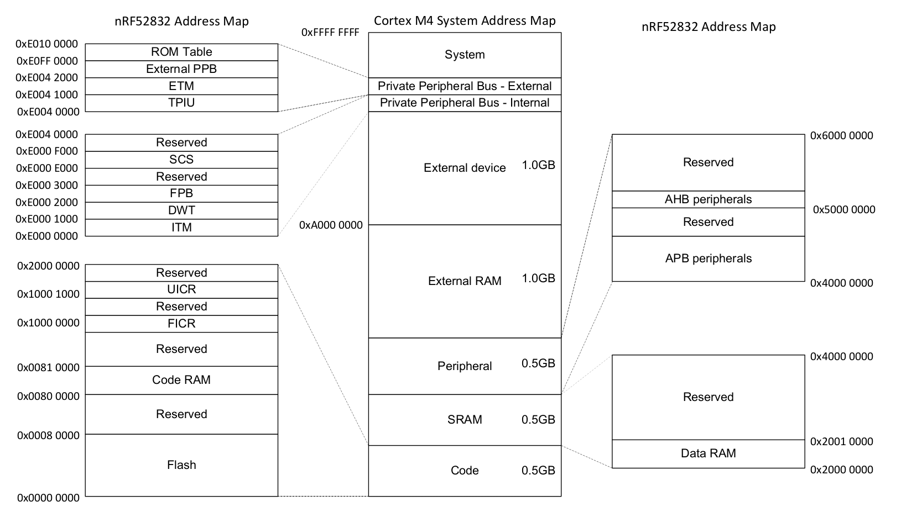
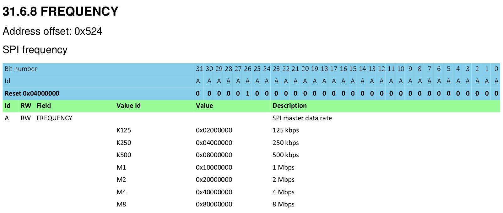
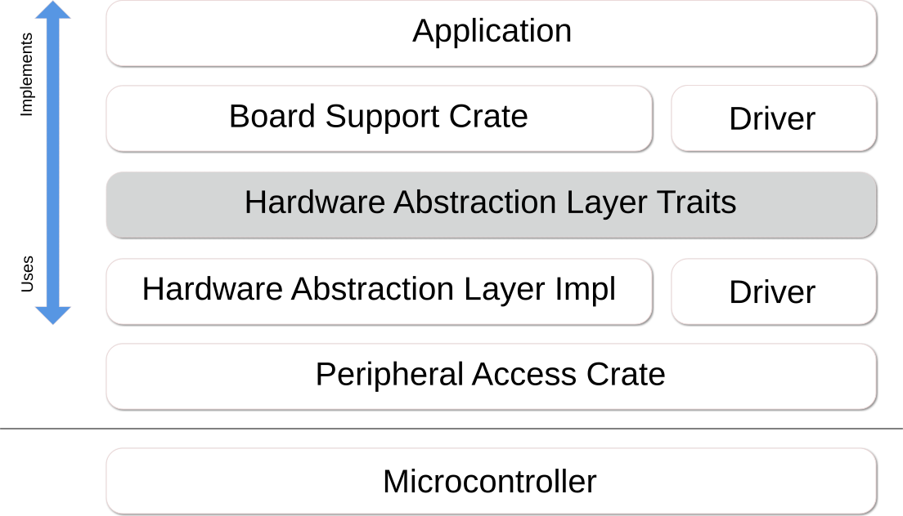

介绍 (Introduction)
欢迎阅读 The Embedded Rust Book: 这是一本关于如何在“裸机 (Bare Metal)“ 嵌入式系统 (例如微控制器 (Microcontroller)) 上使用 Rust 编程语言的入门书籍.
嵌入式 Rust 适用人群
嵌入式 Rust 适合每一位希望在嵌入式编程中利用 Rust 语言提供的更高级概念与安全保证的开发者. (另见 Rust 适用人群)
本书范围
本书的目标包括:
-
帮助开发者快速上手嵌入式 Rust 开发, 即如何搭建开发环境.
-
分享使用 Rust 进行嵌入式开发的 当前 最佳实践, 即如何最佳地使用 Rust 语言功能来编写更正确的嵌入式软件.
-
在某些情况下充当 cookbook, 例如, 如何在单个项目中混合使用 C 与 Rust?
本书力求尽可能通用, 但为了方便读者和作者, 在所有示例中都使用 ARM Cortex-M 架构. 但本书并不假设读者熟悉该特定架构, 并在需要时解释该架构特有的细节.
本书的目标读者
本书面向具有一定嵌入式背景或一定 Rust 背景的读者, 然而我们相信每一位对嵌入式 Rust 编程感到好奇的人都能从本书中获得收获. 对于没有任何先验知识的读者, 我们建议先阅读 “前提与假设” 一节, 补齐缺失的知识, 以便从本书中获得更多收获并改善阅读体验. 你可以查看 “其他资源” 一节, 找到你想要补齐的主题的资源.
前提与假设
- 你能够熟练使用 Rust 编程语言, 并且已经在桌面环境中编写, 运行与调试过 Rust 应用程序. 你还应该熟悉 2018 edition 的惯用法, 因为本书以 Rust 2018 为目标.
- 你能够熟练地使用另一种语言 (如 C, C++ 或 Ada) 开发与调试嵌入式系统, 并且熟悉以下概念:
- 交叉编译 (Cross Compilation)
- 内存映射外设 (Memory Mapped Peripherals)
- 中断 (Interrupts)
- 常见接口, 如 I2C, SPI, Serial 等.
其他资源
如果你对上述任何内容不熟悉, 或者想要获取本书中特定主题的更多信息, 以下几个资源可能会对你有所帮助.
| 主题 | 资源 | 描述 |
|---|---|---|
| Rust | Rust Book | 如果你还不熟悉 Rust, 我们强烈建议先阅读本书. |
| Rust, 嵌入式 | Discovery Book | 如果你从未做过任何嵌入式编程, 本书可能是更好的起点 |
| Rust, 嵌入式 | Embedded Rust Bookshelf | 你可以在这里找到 Rust 嵌入式工作组提供的其他若干资源. |
| Rust, 嵌入式 | Embedonomicon | Rust 嵌入式编程的细致入微的细节. |
| Rust, 嵌入式 | embedded FAQ | 关于 Rust 嵌入式的常见问题. |
| Rust, 嵌入式 | Comprehensive Rust 🦀: Bare Metal | 关于裸机 Rust 开发的 4 天课程的教学材料 |
| 中断 | Interrupt | - |
| 内存映射 I/O 与外设 | Memory-mapped I/O | - |
| SPI, UART, RS232, USB, I2C, TTL | Stack Exchange about SPI, UART, and other interfaces | - |
翻译版本
本书由热心的志愿者翻译. 如果你希望你的翻译版本列在这里, 请提交 PR 来添加。
如何使用本书
本书通常假设你会从前到后依次阅读. 后面的章节建立在前面章节的概念之上, 而前面的章节可能不会深入某个主题的细节, 而是在后续章节中重新讨论该主题.
本书将使用 STMicroelectronics 的 STM32F3DISCOVERY 开发板来完成大部分示例. 该开发板基于 ARM Cortex-M 架构, 虽然基于该架构的大多数 CPU 的基本功能相同, 但不同厂商的微控制器之间的外设与其他实现细节存在差异, 即使是同一厂商的不同微控制器系列之间也常常存在差异.
因此, 我们建议你购买 STM32F3DISCOVERY 开发板来跟随本书的示例.
为本书做贡献
本书的工作在 该仓库 中进行协调, 主要由 资源团队 (resources team) 开发.
如果你在跟随本书的过程中遇到困难, 或发现本书中某些章节不够清晰或难以理解, 那么这就是一个 bug, 应该在本书的 issue 跟踪器 中报告.
非常欢迎提交修复错别字或新增内容的 PR!
复用本书内容
本书按以下许可证发布:
- 本书中包含的代码示例和独立 Cargo 项目均按 MIT License 与 Apache License v2.0 双重许可.
- 本书中包含的书面文字, 图片与图表均按 Creative Commons CC-BY-SA v4.0 许可证发布.
简而言之: 如果你想在你的作品中复用我们的文字或图片, 你需要:
- 给出恰当的署名 (即在你的幻灯片中提及本书, 并提供相关页面的链接)
- 提供 CC-BY-SA v4.0 许可证的链接
- 注明你是否对材料进行了任何修改, 并允许以相同许可证发布你对材料所做的修改
另外, 如果你认为本书有用, 请告诉我们!
认识你的硬件
让我们先熟悉一下将要使用的硬件。
STM32F3DISCOVERY (“F3”)

这块板子上有哪些东西?
-
一颗 STM32F303VCT6 微控制器 (Microcontroller, MCU). 这颗微控制器包含:
-
一个单核 ARM Cortex-M4F 处理器, 硬件支持单精度浮点运算, 最高时钟频率 72 MHz.
-
256 KiB 的 “Flash” 存储器. (1 KiB = 1024 字节)
-
48 KiB 的 RAM.
-
多种集成外设 (Peripheral), 如定时器、I2C、SPI 和 USART.
-
通用输入输出 (General Purpose Input Output, GPIO) 以及其他类型的引脚, 可通过板子两侧的两排排针访问.
-
一个 Mini-USB 接口, 通过标有 “USB USER” 的 USB 端口引出.
-
-
一个 加速度计 (Accelerometer), 是 LSM303DLHC 芯片的一部分.
-
一个 磁力计 (Magnetometer), 是 LSM303DLHC 芯片的一部分.
-
一个 陀螺仪 (Gyroscope), 是 L3GD20 芯片的一部分.
-
8 个用户 LED, 排列成指南针的形状.
-
第二个微控制器: 一颗 STM32F103. 这颗微控制器实际上属于板载的编程器 / 调试器的一部分, 与标有 “USB ST-LINK” 的 Mini-USB 端口相连.
更详细的功能列表和板子的进一步规格说明, 请查看 STMicroelectronics 官网.
温馨提示: 如果你想给板子接入外部信号, 请务必小心. STM32F303VCT6 微控制器的引脚标称电压为 3.3 V. 更多信息请参阅 手册中的 6.2 绝对最大额定值章节
no_std Rust 环境
“嵌入式编程” 这个术语涵盖了范围非常广泛的不同编程类别. 从仅有几 KB RAM 和 ROM 的 8 位 MCU (例如 ST72325xx), 到像 Raspberry Pi (Model B 3+) 这样的系统: 它拥有 32/64 位 4 核 Cortex-A53 @ 1.4 GHz 和 1 GB RAM. 在编写代码时, 根据你的目标硬件和使用场景, 会受到不同的限制.
嵌入式编程大致分为两类:
有操作系统环境 (Hosted Environments)
这类环境接近普通 PC 环境. 也就是说, 你会获得一个系统接口 (例如 POSIX), 它提供与各种系统交互的原语, 例如文件系统、网络、内存管理、线程等. 标准库通常依赖于这些原语来实现其功能. 你还可能拥有某种 sysroot 以及对 RAM/ROM 使用的限制, 也可能存在一些特殊的硬件或 I/O. 总体上感觉像是在一台专用 PC 环境下编码.
裸机环境 (Bare Metal Environments)
在裸机环境中, 你的程序之前没有任何代码被加载.
没有操作系统提供的软件, 我们无法加载标准库.
相反, 程序以及它所使用的 crate 只能使用硬件 (裸机) 来运行.
为了防止 Rust 加载标准库, 使用 no_std.
标准库中与平台无关的部分可以通过 libcore 获得.
libcore 还排除了一些在嵌入式环境中并非总是需要的东西.
其中之一就是用于动态内存分配的内存分配器.
如果你需要这个功能或任何其他功能, 通常都有相应的 crate 来提供它们.
libstd 运行时
如前所述, 使用 libstd 需要某种系统集成, 但这不仅仅是因为
libstd 只是提供了一种访问操作系统抽象的通用方式, 它还提供了一个运行时.
该运行时除了其他职责外, 还负责设置栈溢出保护 (Stack Overflow Protection)、处理命令行参数,
以及在程序的主函数被调用之前派生出主线程. 该运行时在 no_std 环境中同样不可用.
小结
#![no_std] 是一个 crate 级别的属性 (Attribute), 表明该 crate 将链接到 core-crate 而不是 std-crate.
libcore crate 则是 std crate 的一个与平台无关的子集,
它对程序将要运行的系统不做任何假设.
因此, 它为语言原语 (如浮点数、字符串和切片) 提供了 API, 也为暴露处理器特性的 API
(如原子操作 (Atomic Operation) 和 SIMD 指令) 提供了 API. 然而, 它缺少任何涉及平台集成的 API.
由于这些特性, no_std 和 libcore 代码可以用于任何种类的
引导 (stage 0) 代码, 例如引导程序 (Bootloader)、固件 (Firmware) 或内核 (Kernel).
总览
| feature | no_std | std |
|---|---|---|
| heap (dynamic memory) | * | ✓ |
| collections (Vec, BTreeMap, etc) | ** | ✓ |
| stack overflow protection | ✘ | ✓ |
| runs init code before main | ✘ | ✓ |
| libstd available | ✘ | ✓ |
| libcore available | ✓ | ✓ |
| writing firmware, kernel, or bootloader code | ✓ | ✘ |
* 只有当你使用 alloc crate 并搭配一个合适的分配器, 如 alloc-cortex-m 时才可用.
** 只有当你使用 collections crate 并配置一个全局默认分配器时才可用.
** HashMap 和 HashSet 不可用, 因为缺少安全的随机数生成器.
参见
工具链
处理微控制器会涉及使用多种不同的工具, 因为我们将面对的架构不同于你的笔记本电脑, 并且需要在 远程 设备上运行和调试程序.
我们将使用下面列出的所有工具. 当没有指定最低版本时, 任何较新版本都可以工作, 但我们列出了经过测试的版本.
- Rust 1.31、1.31-beta 或更新版本的工具链, 加上 ARM Cortex-M 编译支持.
cargo-binutils~0.1.4qemu-system-arm. 测试版本: 3.0.0- OpenOCD >= 0.8. 测试版本: v0.9.0 和 v0.10.0
- 带 ARM 支持的 GDB. 强烈建议使用 7.12 或更新版本. 测试 版本: 7.10、7.11、7.12 和 8.1
cargo-generate或git. 这些工具是可选的, 但会让跟随本书更加容易.
下面的文字解释了我们为什么使用这些工具. 安装说明见下一页.
cargo-generate 或 git
裸机程序是非标准 (no_std) 的 Rust 程序, 需要对链接过程做一些调整, 才能让程序的内存布局正确.
这需要一些额外的文件 (如链接脚本 (Linker Script)) 和设置 (如链接器 (Linker) 标志).
我们已经为你把它们打包在了一个模板 (Template) 中, 这样你只需要填写缺失的信息 (例如项目名称和目标硬件的特性).
我们的模板与 cargo-generate 兼容: cargo-generate 是一个用于从模板创建新 Cargo 项目的 Cargo 子命令.
你也可以使用 git、curl、wget 或你的网页浏览器来下载模板.
cargo-binutils
cargo-binutils 是一组 Cargo 子命令的集合, 用于便捷地使用 Rust 工具链附带的 LLVM 工具.
这些工具包括 LLVM 版本的 objdump、nm 和 size, 用于检视二进制文件.
使用这些工具相比 GNU binutils 的优势在于: (a) 安装 LLVM 工具只需一条命令 (rustup component add llvm-tools),
与操作系统无关; (b) 像 objdump 这样的工具支持 rustc 所支持的全部架构 (从 ARM 到 x86_64),
因为它们共享同一个 LLVM 后端.
qemu-system-arm
QEMU 是一个模拟器. 在本书中我们使用能够完整模拟 ARM 系统的变种. 我们使用 QEMU 在主机上运行嵌入式程序. 有了它, 即使你手头没有硬件, 也能跟随本书的某些部分!
嵌入式 Rust 调试工具链
总览
在 Rust 中调试嵌入式系统需要专门的工具, 包括用于管理调试过程的软件、用于检查和控制程序执行的调试器, 以及用于主机与嵌入式设备交互的硬件探针 (Probe). 本文档概述了必要的软件工具, 如 Probe-rs 和 OpenOCD, 它们简化并支持了调试过程; 同时还涵盖了主要的调试器, 如 GDB 和 Probe-rs 的 Visual Studio Code 扩展. 此外, 本文档还介绍了关键的硬件探针, 如 Rusty-probe、ST-Link、J-Link 和 MCU-Link, 它们对于嵌入式设备的有效调试和编程是不可或缺的.
驱动调试工具的软件
Probe-rs
Probe-rs 是一款现代的、聚焦 Rust 的软件, 专为嵌入式系统中的调试器而设计. 与 OpenOCD 不同, Probe-rs 在设计时追求简洁, 旨在减少其他调试方案中常见的配置负担. 它支持各种探针和目标, 提供了一个与嵌入式硬件交互的高级接口. Probe-rs 直接与 Rust 工具链集成, 并通过其 Visual Studio Code 扩展与 VS Code 集成, 让开发者能够简化调试工作流.
OpenOCD (Open On-Chip Debugger)
OpenOCD 是一个开源软件工具, 用于嵌入式系统的调试、测试和编程. 它在主机系统和嵌入式硬件之间提供一个接口, 支持多种传输层, 如 JTAG 和 SWD (Serial Wire Debug). OpenOCD 与 GDB (一个调试器) 集成. OpenOCD 拥有广泛的支持、丰富的文档和庞大的社区, 但可能需要复杂的配置, 尤其是在定制化的嵌入式环境中.
调试器
调试器允许开发者检查和控制程序的执行, 以识别和修正错误或缺陷 (Bug). 它提供诸如设置断点 (Breakpoint)、逐行单步 (Single Step) 执行代码, 以及检查变量值和内存状态等功能. 调试器对于全面的软件开发和维护至关重要, 使开发者能够确保他们的代码在各种条件下按预期行为运行.
调试器知道如何:
- 与内存映射 (Memory Mapped) 寄存器 (Register) 交互.
- 设置断点 / 观察点 (Watchpoint).
- 读写内存映射的寄存器.
- 检测 MCU 是否因调试事件而停止.
- 在遇到调试事件后继续 MCU 的执行.
- 擦除和写入微控制器的 Flash.
Probe-rs 的 Visual Studio Code 扩展
Probe-rs 提供了一个 Visual Studio Code 扩展, 无需复杂配置即可提供无缝的调试体验. 通过这种连接, 开发者可以使用 Rust 特有的功能 (如美化打印和详细的错误消息), 确保他们的调试过程与 Rust 生态系统相契合.
TRACE32
TRACE32 是 Lauterbach 为嵌入式系统开发的专业的调试和跟踪解决方案. 它支持广泛的处理器架构, 包括 ARM 和 RISC-V, 并通过 JTAG、SWD 和各种跟踪接口连接到目标硬件. TRACE32 提供高级的调试能力, 例如多核调试、复杂断点以及实时跟踪分析. 它使用标准的 ELF/DWARF 调试信息, 因此与使用常规工具链构建的 Rust 二进制文件兼容.
GDB (GNU Debugger)
GDB 是一个多用途的调试工具, 允许开发者检查正在运行或崩溃后的程序状态. 对于嵌入式 Rust, GDB 通过 OpenOCD 或其他调试服务器连接到目标系统, 以与嵌入式代码交互. GDB 高度可配置, 支持远程调试、变量检查和条件断点等功能. 它可在多种平台上使用, 对 Rust 特有的调试需求 (如美化打印和与 IDE 的集成) 提供了广泛的支持.
探针 (Probes)
硬件探针是一种用于嵌入式系统开发和调试的设备, 用于促进主机与目标嵌入式设备之间的通信. 它通常支持 JTAG 或 SWD 等协议, 使其能够对嵌入式系统上的微控制器或微处理器进行编程、调试和分析. 硬件探针对于开发者设置断点、单步执行代码、检查内存和处理器寄存器至关重要, 能够让他们实时诊断和修复问题.
Rusty-probe
Rusty-probe 是一款开源的基于 USB 的硬件调试探针, 专为与 probe-rs 配合使用而设计. Rusty-probe 与 probe-rs 的组合为从事嵌入式 Rust 应用程序开发的开发者提供了一个易用且经济实惠的解决方案.
ST-Link
ST-Link 是 STMicroelectronics 开发的一款流行的调试和编程探针, 主要用于其 STM32 和 STM8 微控制器系列. 它支持通过 JTAG 或 SWD (Serial Wire Debug) 接口进行调试和编程. ST-Link 因 STMicroelectronics 大量开发板的直接支持以及与主流 IDE 的集成而被广泛使用, 使其成为使用 STM 微控制器的开发者的便捷选择.
J-Link
J-Link 由 SEGGER Microcontroller 开发, 是一款强大而多用途的调试器, 支持远超 ARM 的各种 CPU 核和设备, 例如 RISC-V. J-Link 以其高性能和可靠性著称, 支持各种通信接口, 包括 JTAG、SWD 和细间距 JTAG 接口. 它因 Flash 中无限制的断点等高级功能, 以及与众多开发环境的兼容性而受到青睐.
MCU-Link
MCU-Link 是一款由 NXP Semiconductors 提供的, 兼具调试探针和编程器功能的设备. 它支持多种 ARM Cortex 微控制器, 并能与 MCUXpresso IDE 等开发工具无缝协作. MCU-Link 因其多功能性和经济实惠而尤为突出, 成为业余爱好者、教育工作者和专业开发者都可获得的选择.
安装工具
本页面包含一些与操作系统无关的工具安装说明:
Rust 工具链 (Toolchain)
按照 https://rustup.rs 上的说明安装 rustup.
注意 请确保你的编译器版本等于或高于 1.31. rustc -V 应返回比下面显示的日期更新的版本.
$ rustc -V
rustc 1.31.1 (b6c32da9b 2018-12-18)
出于带宽和磁盘占用的考虑, 默认安装仅支持本地编译. 要添加对 ARM Cortex-M 架构的交叉编译 (Cross Compilation) 支持, 请从以下编译目标中选择一个. 对于本书示例中使用的 STM32F3DISCOVERY 板子, 请使用 thumbv7em-none-eabihf 目标.
为你寻找最合适的 Cortex-M.
Cortex-M0、M0+ 和 M1 (ARMv6-M 架构):
rustup target add thumbv6m-none-eabi
Cortex-M3 (ARMv7-M 架构):
rustup target add thumbv7m-none-eabi
Cortex-M4 和 M7 (无硬件浮点) (ARMv7E-M 架构):
rustup target add thumbv7em-none-eabi
Cortex-M4F 和 M7F (带硬件浮点) (ARMv7E-M 架构):
rustup target add thumbv7em-none-eabihf
Cortex-M23 (ARMv8-M 架构):
rustup target add thumbv8m.base-none-eabi
Cortex-M33 和 M35P (ARMv8-M 架构):
rustup target add thumbv8m.main-none-eabi
Cortex-M33F 和 M35PF (带硬件浮点) (ARMv8-M 架构):
rustup target add thumbv8m.main-none-eabihf
cargo-binutils
cargo install cargo-binutils
rustup component add llvm-tools
WINDOWS: 前置条件: 已安装 Visual Studio 2019 的 C++ 生成工具. https://visualstudio.microsoft.com/thank-you-downloading-visual-studio/?sku=BuildTools&rel=16
cargo-generate
我们稍后会使用它来从模板生成项目.
cargo install cargo-generate
注意: 在某些 Linux 发行版 (例如 Ubuntu) 上, 你可能需要先安装 libssl-dev 和 pkg-config 软件包, 然后再安装 cargo-generate.
操作系统特定说明
现在, 请按照你所使用操作系统的特定说明进行操作:
Linux
以下是几个 Linux 发行版的安装命令.
软件包
- Ubuntu 18.04 或更新版本 / Debian stretch 或更新版本
注意
gdb-multiarch是用于调试 ARM Cortex-M 程序的 GDB 命令
sudo apt install gdb-multiarch openocd qemu-system-arm
- Ubuntu 14.04 和 16.04
注意
arm-none-eabi-gdb是用于调试 ARM Cortex-M 程序的 GDB 命令
sudo apt install gdb-arm-none-eabi openocd qemu-system-arm
- Fedora 27 或更新版本
sudo dnf install gdb openocd qemu-system-arm
- Arch Linux
注意
arm-none-eabi-gdb是用于调试 ARM Cortex-M 程序的 GDB 命令
sudo pacman -S arm-none-eabi-gdb qemu-system-arm openocd
udev 规则 (udev rules)
这条规则让你无需 root 权限即可在 Discovery 开发板上使用 OpenOCD.
创建文件 /etc/udev/rules.d/70-st-link.rules, 内容如下所示.
# STM32F3DISCOVERY rev A/B - ST-LINK/V2
ATTRS{idVendor}=="0483", ATTRS{idProduct}=="3748", TAG+="uaccess"
# STM32F3DISCOVERY rev C+ - ST-LINK/V2-1
ATTRS{idVendor}=="0483", ATTRS{idProduct}=="374b", TAG+="uaccess"
然后用以下命令重新加载所有 udev 规则:
sudo udevadm control --reload-rules
如果之前已将开发板插入笔记本电脑, 请先拔出再重新插入.
你可以通过运行以下命令检查权限:
lsusb
输出应该类似如下
(..)
Bus 001 Device 018: ID 0483:374b STMicroelectronics ST-LINK/V2.1
(..)
请记下总线 (bus) 和设备 (device) 编号. 使用这些编号构造路径 /dev/bus/usb/<bus>/<device>. 然后像下面这样使用该路径:
ls -l /dev/bus/usb/001/018
crw-------+ 1 root root 189, 17 Sep 13 12:34 /dev/bus/usb/001/018
getfacl /dev/bus/usb/001/018 | grep user
user::rw-
user:you:rw-
权限末尾的 + 表示存在扩展权限. getfacl 命令告诉你用户 you 可以使用此设备.
现在, 进入下一节.
macOS
所有工具都可以通过 Homebrew 或 MacPorts 安装:
使用 Homebrew 安装工具
$ # GDB
$ brew install arm-none-eabi-gdb
$ # OpenOCD
$ brew install openocd
$ # QEMU
$ brew install qemu
注意 如果 OpenOCD 崩溃, 你可能需要使用以下命令安装最新版本:
$ brew install --HEAD openocd
使用 MacPorts 安装工具
$ # GDB
$ sudo port install arm-none-eabi-gcc
$ # OpenOCD
$ sudo port install openocd
$ # QEMU
$ sudo port install qemu
完成! 进入下一节.
Windows
arm-none-eabi-gdb
ARM 提供了 .exe 安装程序用于 Windows. 从这里下载一个, 并按照说明操作.
在安装过程即将结束时, 勾选/选择 “Add path to environment variable” (添加到环境变量) 选项. 然后验证工具是否已加入你的 %PATH%:
$ arm-none-eabi-gdb -v
GNU gdb (GNU Tools for Arm Embedded Processors 7-2018-q2-update) 8.1.0.20180315-git
(..)
OpenOCD
Windows 上没有 OpenOCD 的官方二进制发布版本, 但如果你不想自己编译, xPack 项目提供了一个二进制发行版, 见这里. 按照提供的安装说明进行操作. 然后将二进制文件所在的路径加入你的 %PATH% 环境变量.
(如果你使用的是简易安装方式, 路径类似 C:\Users\USERNAME\AppData\Roaming\xPacks\@xpack-dev-tools\openocd\0.10.0-13.1\.content\bin\)
使用以下命令验证 OpenOCD 是否已加入你的 %PATH%:
$ openocd -v
Open On-Chip Debugger 0.10.0
(..)
QEMU
从官方网站下载 QEMU.
ST-LINK USB 驱动
你还需要安装此 USB 驱动, 否则 OpenOCD 无法工作. 按照安装程序的说明操作, 并确保安装了正确版本 (32 位或 64 位) 的驱动.
完成! 进入下一节.
验证安装 (Verify Installation)
在本节中, 我们将检查一些必需的工具 / 驱动是否已正确安装和配置.
使用 Mini-USB 数据线将笔记本电脑 / 台式机连接到 discovery 开发板. Discovery 开发板有两个 USB 接口; 请使用标有 “USB ST-LINK” 的那个, 它位于板子边缘的中央.
同时检查 ST-LINK 排针是否已焊接. 参见下图; ST-LINK 排针已在图中高亮标出.

现在运行以下命令:
openocd -f interface/stlink.cfg -f target/stm32f3x.cfg
注意: 旧版本的 openocd, 包括 2017 年的 0.10.0 发布版, 并不包含新的 (也是更推荐的)
interface/stlink.cfg文件; 你可能需要改用interface/stlink-v2.cfg或interface/stlink-v2-1.cfg.
你应该会看到以下输出, 并且程序会阻塞控制台:
Open On-Chip Debugger 0.10.0
Licensed under GNU GPL v2
For bug reports, read
http://openocd.org/doc/doxygen/bugs.html
Info : auto-selecting first available session transport "hla_swd". To override use 'transport select <transport>'.
adapter speed: 1000 kHz
adapter_nsrst_delay: 100
Info : The selected transport took over low-level target control. The results might differ compared to plain JTAG/SWD
none separate
Info : Unable to match requested speed 1000 kHz, using 950 kHz
Info : Unable to match requested speed 1000 kHz, using 950 kHz
Info : clock speed 950 kHz
Info : STLINK v2 JTAG v27 API v2 SWIM v15 VID 0x0483 PID 0x374B
Info : using stlink api v2
Info : Target voltage: 2.919881
Info : stm32f3x.cpu: hardware has 6 breakpoints, 4 watchpoints
内容可能不完全一致, 但你应该会看到关于断点 (breakpoints) 和观察点 (watchpoints) 的最后一行. 如果看到了, 那么终止 OpenOCD 进程并进入下一节.
如果你没有看到 “breakpoints” 这一行, 请尝试以下命令之一.
openocd -f interface/stlink-v2.cfg -f target/stm32f3x.cfg
openocd -f interface/stlink-v2-1.cfg -f target/stm32f3x.cfg
如果这些命令之一可以工作, 说明你的 discovery 开发板是旧硬件版本. 这不会造成问题, 但请记住这一点, 因为稍后你需要用略有不同的方式配置. 你可以进入下一节.
如果以普通用户身份运行这些命令都不工作, 请尝试以 root 权限运行 (例如 sudo openocd ..). 如果使用 root 权限后命令可以工作, 那么请检查 udev 规则 是否已正确设置.
如果你已经走到这一步, 但 OpenOCD 仍然无法工作, 请提交一个 issue, 我们会帮你解决!
入门
在本节中, 我们将带你逐步走过编写, 构建, 烧录和调试嵌入式程序的完整流程. 你可以在没有任何特殊硬件的情况下尝试大部分示例, 因为我们将使用 QEMU (一个流行的开源硬件模拟器) 来演示基础部分. 唯一需要硬件的部分, 自然是 Hardware 这一节, 在那里我们使用 OpenOCD 来给一块 STM32F3DISCOVERY 编程.
QEMU
我们将开始为 LM3S6965 编写程序, 这是一款 Cortex-M3 微控制器 (Microcontroller, MCU). 我们之所以把它作为初始目标, 是因为它 可以被 QEMU 模拟, 这样在这一节你就不必摆弄硬件, 可以专注于工具链和开发流程.
重要 (IMPORTANT) 在本教程中, 我们将使用 “app” 作为项目名. 每当你看到 “app” 这个词时, 都应该把它替换成你为自己项目选择的名称. 当然, 你也可以直接把自己的项目命名为 “app”, 这样就避免了替换.
创建一个非标准的 Rust 程序
我们将使用 cortex-m-quickstart 项目模板来生成一个新项目. 生成的项目会包含一个骨架应用: 它是一个很好的嵌入式 Rust 应用起点. 此外, 项目中还会包含一个 examples 目录, 其中有若干独立的示例程序, 突出展示了嵌入式 Rust 的一些关键功能.
使用 cargo-generate
首先安装 cargo-generate
cargo install cargo-generate
然后生成一个新项目
cargo generate --git https://github.com/knurling-rs/app-template
Project Name: app
Creating project called `app`...
Done! New project created /tmp/app
cd app
使用 git
克隆仓库
git clone https://github.com/rust-embedded/cortex-m-quickstart app
cd app
然后填充 Cargo.toml 文件中的占位符
[package]
authors = ["{{authors}}"] # "{{authors}}" -> "John Smith"
edition = "2018"
name = "{{project-name}}" # "{{project-name}}" -> "app"
version = "0.1.0"
# ..
[[bin]]
name = "{{project-name}}" # "{{project-name}}" -> "app"
test = false
bench = false
两种都不用
抓取 cortex-m-quickstart 模板的最新快照并解压.
curl -LO https://github.com/rust-embedded/cortex-m-quickstart/archive/master.zip
unzip master.zip
mv cortex-m-quickstart-master app
cd app
或者你也可以浏览 cortex-m-quickstart, 点击绿色的 “Clone or download” 按钮, 然后点击 “Download ZIP”.
然后按照 “使用 git” 部分中的第二步填充 Cargo.toml 文件中的占位符.
程序概览
为方便起见, 这里给出 src/main.rs 中最重要的几部分源码:
#![no_std]
#![no_main]
use panic_halt as _;
use cortex_m_rt::entry;
#[entry]
fn main() -> ! {
loop {
// 你的代码写在这里
// your code goes here
}
}这个程序和标准 Rust 程序有一点不同, 让我们仔细看看.
#![no_std] 表示这个程序不会链接到标准 crate, 即 std. 取而代之, 它会链接到 std 的子集: core crate.
#![no_main] 表示这个程序不会使用大多数 Rust 程序所使用的标准 main 接口. 使用 no_main 的主要原因是: 在 no_std 环境下使用 main 接口需要 nightly 工具链.
use panic_halt as _;. 这个 crate 提供了一个 panic_handler, 用于定义程序的异常处理 (Panicking) 行为. 我们将在本书的 Panicking 一章中详细介绍这一点.
#[entry] 是 cortex-m-rt crate 提供的一个属性 (attribute), 用来标记程序的入口点. 由于我们不使用标准的 main 接口, 所以需要另一种方式来指示程序的入口点, 那就是 #[entry].
fn main() -> !. 我们的程序将是目标硬件上运行的唯一进程, 所以我们不希望它结束! 我们使用一个 发散函数 (divergent function) (即函数签名中的 -> !) 来在编译期保证这一点.
交叉编译 (Cross Compilation)
首先, 我们需要目标微控制器 (本例中为 LM3S6965) 的内存布局信息. 否则构建过程将无法链接镜像. 在项目根目录创建一个名为 memory.x 的文件, 并粘贴以下内容:
MEMORY
{
/* NOTE 1 K = 1 KiBi = 1024 bytes */
/* TODO 根据你的设备内存布局调整这些内存区域 */
/* TODO Adjust these memory regions to match your device memory layout */
/* 这些数值对应 LM3S6965, 是 QEMU 能够模拟的少数设备之一 */
/* These values correspond to the LM3S6965, one of the few devices QEMU can emulate */
FLASH : ORIGIN = 0x00000000, LENGTH = 256K
RAM : ORIGIN = 0x20000000, LENGTH = 64K
}
/* 调用栈将在此处分配. */
/* This is where the call stack will be allocated. */
/* 栈是 full descending 类型. */
/* The stack is of the full descending type. */
/* 你可能想使用这个变量来将调用栈和静态变量放在不同的内存区域中. 下面是默认值 */
/* You may want to use this variable to locate the call stack and static
variables in different memory regions. Below is shown the default value */
/* _stack_start = ORIGIN(RAM) + LENGTH(RAM); */
/* 你可以使用这个符号来自定义 .text 段的位置 */
/* You can use this symbol to customize the location of the .text section */
/* 如果省略, .text 段将被放在 .vector_table 段的紧后面 */
/* If omitted the .text section will be placed right after the .vector_table
section */
/* 这只在那些在向量表后存储了一些配置的微控制器上是必需的 */
/* This is required only on microcontrollers that store some configuration right
after the vector table */
/* _stext = ORIGIN(FLASH) + 0x400; */
/* 把未初始化变量放到自定义 RAM 区域的示例. */
/* Example of putting non-initialized variables into custom RAM locations. */
/* 这假设你在上面定义了 RAM2 区域, 并且在 Rust 源码中给数据项 */
/* This assumes you have defined a region RAM2 above, and in the Rust
sources added the attribute `#[link_section = ".ram2bss"]` to the data
you want to place there. */
/* 添加了 `#[link_section = ".ram2bss"]` 属性. */
/* Note that the section will not be zero-initialized by the runtime! */
/* 注意运行时不会将该段清零! */
/* SECTIONS {
.ram2bss (NOLOAD) : ALIGN(4) {
*(.ram2bss);
. = ALIGN(4);
} > RAM2
} INSERT AFTER .bss;
*/
下一步是为 Cortex-M3 架构进行交叉 (cross) 编译. 如果你知道编译目标 ($TRIPLE) 是什么, 那么只要运行 cargo build --target $TRIPLE 就可以了. 幸运的是, 模板中的 .cargo/config.toml 已经给出了答案:
tail -n6 .cargo/config.toml
[build]
# Pick ONE of these compilation targets
# target = "thumbv6m-none-eabi" # Cortex-M0 and Cortex-M0+
target = "thumbv7m-none-eabi" # Cortex-M3
# target = "thumbv7em-none-eabi" # Cortex-M4 and Cortex-M7 (no FPU)
# target = "thumbv7em-none-eabihf" # Cortex-M4F and Cortex-M7F (with FPU)
要为 Cortex-M3 架构进行交叉编译, 我们必须使用 thumbv7m-none-eabi. 安装 Rust 工具链 (Toolchain) 时该目标不会自动安装, 如果你之前还没有添加过这个目标, 那么现在是把它加入工具链的好时机:
rustup target add thumbv7m-none-eabi
由于 thumbv7m-none-eabi 编译目标已经被设置为 .cargo/config.toml 中的默认值, 下面两条命令的作用是相同的:
cargo build --target thumbv7m-none-eabi
cargo build
检查
现在我们在 target/thumbv7m-none-eabi/debug/app 得到了一个非原生 ELF (Executable and Linkable Format) 二进制文件 (Binary). 我们可以使用 cargo-binutils 来检查它.
使用 cargo-readobj, 我们可以打印 ELF 头来确认这是一个 ARM 二进制.
cargo readobj --bin app -- --file-headers
注意:
--bin app是检查target/$TRIPLE/debug/app处二进制文件的语法糖--bin app在必要的情况下也会 (重新) 编译二进制文件
ELF Header:
Magic: 7f 45 4c 46 01 01 01 00 00 00 00 00 00 00 00 00
Class: ELF32
Data: 2's complement, little endian
Version: 1 (current)
OS/ABI: UNIX - System V
ABI Version: 0x0
Type: EXEC (Executable file)
Machine: ARM
Version: 0x1
Entry point address: 0x405
Start of program headers: 52 (bytes into file)
Start of section headers: 153204 (bytes into file)
Flags: 0x5000200
Size of this header: 52 (bytes)
Size of program headers: 32 (bytes)
Number of program headers: 2
Size of section headers: 40 (bytes)
Number of section headers: 19
Section header string table index: 18
cargo-size 可以打印二进制文件的链接段 (Linker Section) 的大小.
cargo size --bin app --release -- -A
我们使用 --release 来检查优化后的版本
app :
section size addr
.vector_table 1024 0x0
.text 92 0x400
.rodata 0 0x45c
.data 0 0x20000000
.bss 0 0x20000000
.debug_str 2958 0x0
.debug_loc 19 0x0
.debug_abbrev 567 0x0
.debug_info 4929 0x0
.debug_ranges 40 0x0
.debug_macinfo 1 0x0
.debug_pubnames 2035 0x0
.debug_pubtypes 1892 0x0
.ARM.attributes 46 0x0
.debug_frame 100 0x0
.debug_line 867 0x0
Total 14570
ELF 链接段复习
.text包含程序指令.rodata包含字符串之类的常量值.data包含初始值不为零的静态分配变量.bss也包含静态分配变量, 但这些变量的初始值是零.vector_table是一个非标准段, 我们用它来存储向量 (中断) 表.ARM.attributes和.debug_*段包含元数据, 在烧录二进制时不会被加载到目标设备上.
重要 (IMPORTANT): ELF 文件包含调试信息等元数据, 所以它们在磁盘上的大小并不能准确反映烧录到设备上时程序实际占用的空间. 请始终使用 cargo-size 来检查二进制文件的真实大小.
cargo-objdump 可以用来反汇编二进制文件.
cargo objdump --bin app --release -- --disassemble --no-show-raw-insn --print-imm-hex
注意 (NOTE) 如果上面的命令报
Unknown command line argument错误, 请参阅以下 bug 报告: https://github.com/rust-embedded/book/issues/269
注意 (NOTE) 此输出在你的系统上可能有所不同. 新版本的 rustc, LLVM 和库可能生成不同的汇编. 我们截断了一部分指令以保持片段简短.
app: file format ELF32-arm-little
Disassembly of section .text:
main:
400: bl #0x256
404: b #-0x4 <main+0x4>
Reset:
406: bl #0x24e
40a: movw r0, #0x0
< .. truncated any more instructions .. >
DefaultHandler_:
656: b #-0x4 <DefaultHandler_>
UsageFault:
657: strb r7, [r4, #0x3]
DefaultPreInit:
658: bx lr
__pre_init:
659: strb r7, [r0, #0x1]
__nop:
65a: bx lr
HardFaultTrampoline:
65c: mrs r0, msp
660: b #-0x2 <HardFault_>
HardFault_:
662: b #-0x4 <HardFault_>
HardFault:
663: <unknown>
运行
接下来, 让我们看看如何在 QEMU 上运行嵌入式程序! 这次我们将使用 hello 示例, 它实际上会做一些事情. 默认情况下, 此示例使用 [defmt] 和 RTT 来打印文本.
注意 (NOTE)
defmt是一个第三方依赖 (即非核心依赖), 在嵌入式 Rust 生态中被广泛使用.
为了在主机端读取并解码 defmt 生成的消息, 我们需要将 RTT 传输输出切换为半主机 (Semihosting). 在真实硬件上这需要一个调试会话, 但在 QEMU 中直接就能工作.
让我们切换依赖:
cargo remove defmt-rtt
cargo add defmt-semihosting
打开 src/lib.rs, 把 use defmt_rtt as _; 替换为 use defmt_semihosting as _;
现在我们可以构建示例:
cargo build --bin hello
输出二进制文件位于
target/thumbv7m-none-eabi/debug/hello.
要在 QEMU 上运行这个二进制文件, 通常使用以下命令就够了:
qemu-system-arm \
-cpu cortex-m3 \
-machine lm3s6965evb \
-nographic \
-semihosting-config enable=on,target=native \
-kernel target/thumbv7m-none-eabi/debug/hello
在我们这里, 由于使用了 defmt, 主机将无法解码输出. 相反, 我们需要使用 Ferrous Systems 提供的一个工具 qemu-run:
git clone git@github.com:knurling-rs/defmt.git
cd defmt/qemu-run/
cargo run -- --machine lm3s6965evb ../qemu-rs/target/thumbv7m-none-eabi/debug/hello
Hello, world!
该命令应该在打印文本后成功退出 (退出码 = 0). 在 *nix 系统上, 你可以用以下命令检查:
echo $?
0
我们来分解一下那条 QEMU 命令:
-
qemu-system-arm. 这就是 QEMU 模拟器. QEMU 二进制有几种变体; 这个变体对 ARM 机器进行完整的系统模拟, 因此得名. -
-cpu cortex-m3. 这告诉 QEMU 模拟一个 Cortex-M3 CPU. 指定 CPU 型号能让我们捕获到一些编译错误: 例如, 运行一个为 Cortex-M4F (它带有硬件 FPU (Floating Point Unit, 浮点单元)) 编译的程序, QEMU 在执行时会报错. -
-machine lm3s6965evb. 这告诉 QEMU 模拟 LM3S6965EVB, 一块包含 LM3S6965 微控制器的评估板. -
-nographic. 这告诉 QEMU 不要启动它的图形界面. -
-semihosting-config (..). 这告诉 QEMU 启用半主机 (Semihosting). 半主机让被模拟的设备 (除其他功能外) 能够使用主机的 stdout, stderr 和 stdin, 并在主机上创建文件. -
-kernel $file. 这告诉 QEMU 在被模拟的机器上加载并运行哪个二进制文件.
每次都输入这么长的 QEMU 命令太麻烦了! 我们可以设置一个自定义 runner 来简化这个流程. .cargo/config.toml 中有一个被注释掉的 runner, 它会调用 QEMU; 让我们把它取消注释:
head -n3 .cargo/config.toml
[target.thumbv7m-none-eabi]
# uncomment this to make `cargo run` execute programs on QEMU
runner = "qemu-system-arm -cpu cortex-m3 -machine lm3s6965evb -nographic -semihosting-config enable=on,target=native -kernel"
这个 runner 只对 thumbv7m-none-eabi 目标生效, 它正是我们默认的编译目标. 现在 cargo run 将编译程序并在 QEMU 上运行它:
cargo run --example hello --release
Compiling app v0.1.0 (file:///tmp/app)
Finished release [optimized + debuginfo] target(s) in 0.26s
Running `qemu-system-arm -cpu cortex-m3 -machine lm3s6965evb -nographic -semihosting-config enable=on,target=native -kernel target/thumbv7m-none-eabi/release/examples/hello`
Hello, world!
调试
调试 (Debug) 对嵌入式开发至关重要. 让我们看看具体该怎么做.
调试嵌入式设备涉及远程调试, 因为我们要调试的程序并不会运行在运行调试器程序 (GDB 或 LLDB) 的那台机器上.
远程调试涉及一个客户端和一个服务器. 在 QEMU 配置中, 客户端将是一个 GDB (或 LLDB) 进程, 而服务器将是同样在运行嵌入式程序的 QEMU 进程.
在本节中, 我们将使用之前已经编译过的 hello 示例.
调试的第一步是以调试模式启动 QEMU:
qemu-system-arm \
-cpu cortex-m3 \
-machine lm3s6965evb \
-nographic \
-semihosting-config enable=on,target=native \
-gdb tcp::3333 \
-S \
-kernel target/thumbv7m-none-eabi/debug/examples/hello
这条命令不会向控制台打印任何东西, 并且会阻塞终端. 这次我们多传了两个标志:
-
-gdb tcp::3333. 这告诉 QEMU 在 TCP 端口 3333 上等待 GDB 连接. -
-S. 这告诉 QEMU 在启动时冻结机器. 没有这个标志的话, 在我们启动调试器之前程序就已经执行完 main 了!
接下来我们在另一个终端中启动 GDB, 并告诉它加载示例的调试符号:
gdb-multiarch -q target/thumbv7m-none-eabi/debug/examples/hello
注意 (NOTE): 你可能需要使用其他版本的 gdb, 而不是 gdb-multiarch, 这取决于你在安装章节中安装的是哪个版本. 它也可能是 arm-none-eabi-gdb 或者就是 gdb.
然后在 GDB shell 中连接到正在 TCP 端口 3333 上等待连接的 QEMU.
target remote :3333
Remote debugging using :3333
Reset () at $REGISTRY/cortex-m-rt-0.6.1/src/lib.rs:473
473 pub unsafe extern "C" fn Reset() -> ! {
你会看到进程被挂起, 程序计数器指向一个名为 Reset 的函数. 那是复位处理函数 (reset handler): Cortex-M 内核在启动时执行的就是它.
注意, 在某些环境下, gdb 不会显示上面那一行
Reset () at $REGISTRY/cortex-m-rt-0.6.1/src/lib.rs:473, 而是可能打印一些警告, 例如:
core::num::bignum::Big32x40::mul_small () at src/libcore/num/bignum.rs:254src/libcore/num/bignum.rs: No such file or directory.这是一个已知的 bug, 你可以安全地忽略这些警告, 你大概率就停在
Reset()那里了.
这个复位处理函数最终会调用我们的 main 函数. 让我们用断点和 continue 命令一路跳到那里. 要设置断点, 先用 list 命令看看我们想在哪里打断.
list main
这会显示来自文件 examples/hello.rs 的源码.
6 use panic_halt as _;
7
8 use cortex_m_rt::entry;
9 use cortex_m_semihosting::{debug, hprintln};
10
11 #[entry]
12 fn main() -> ! {
13 hprintln!("Hello, world!").unwrap();
14
15 // exit QEMU
我们想在 “Hello, world!” 之前加一个断点, 也就是第 13 行. 用 break 命令来做这件事:
break 13
现在我们可以用 continue 命令让 gdb 一直运行到我们的 main 函数:
continue
Continuing.
Breakpoint 1, hello::__cortex_m_rt_main () at examples\hello.rs:13
13 hprintln!("Hello, world!").unwrap();
现在我们离打印 “Hello, world!” 的代码很近了. 让我们用 next 命令前进.
next
16 debug::exit(debug::EXIT_SUCCESS);
此时, 你应该能在运行 qemu-system-arm 的那个终端上看到 “Hello, world!” 被打印出来.
$ qemu-system-arm (..)
Hello, world!
再次调用 next 会终止 QEMU 进程.
next
[Inferior 1 (Remote target) exited normally]
现在你可以退出 GDB 会话了.
quit
硬件 (Hardware)
到目前为止, 你应该已经对工具链和开发流程比较熟悉了. 在这一节, 我们将切换到真实硬件上; 流程基本保持不变. 让我们开始吧.
了解你的硬件
在开始之前, 你需要识别目标设备的一些特性, 因为这些特性将用于配置项目:
-
ARM 内核. 例如 Cortex-M3.
-
ARM 内核是否包含 FPU? Cortex-M4F 和 Cortex-M7F 内核包含.
-
目标设备有多少 Flash 内存和 RAM? 例如 256 KiB Flash 和 32 KiB RAM.
-
Flash 内存和 RAM 在地址空间中的映射位置在哪里? 例如 RAM 通常位于地址
0x2000_0000.
你可以在设备的数据手册 (data sheet) 或参考手册 (reference manual) 中找到这些信息.
在本节中, 我们将使用我们的参考硬件 STM32F3DISCOVERY. 该开发板上有一颗 STM32F303VCT6 微控制器. 该微控制器具有:
-
一个 Cortex-M4F 内核, 包含单精度 FPU
-
256 KiB Flash, 位于地址 0x0800_0000.
-
40 KiB RAM, 位于地址 0x2000_0000. (还有另一块 RAM 区域, 为了简单起见我们忽略它).
配置
我们将从零开始, 用一个新的模板实例. 关于如何在没有 cargo-generate 的情况下做这件事, 请参阅 上一节关于 QEMU 的内容 以复习.
$ cargo generate --git https://github.com/rust-embedded/cortex-m-quickstart
Project Name: app
Creating project called `app`...
Done! New project created /tmp/app
$ cd app
第一步是在 .cargo/config.toml 中设置默认编译目标.
tail -n5 .cargo/config.toml
# Pick ONE of these compilation targets
# target = "thumbv6m-none-eabi" # Cortex-M0 and Cortex-M0+
# target = "thumbv7m-none-eabi" # Cortex-M3
# target = "thumbv7em-none-eabi" # Cortex-M4 and Cortex-M7 (no FPU)
target = "thumbv7em-none-eabihf" # Cortex-M4F and Cortex-M7F (with FPU)
我们将使用 thumbv7em-none-eabihf, 因为它能覆盖 Cortex-M4F 内核.
注意 (NOTE): 正如你可能从上一章记得的那样, 我们必须安装所有目标, 而这是一个新目标. 所以别忘了为这个目标运行安装过程
rustup target add thumbv7em-none-eabihf.
第二步是将内存区域信息填入 memory.x 文件.
$ cat memory.x
/* STM32F303VCT6 的链接器脚本 (Linker Script) */
/* Linker script for the STM32F303VCT6 */
MEMORY
{
/* NOTE 1 K = 1 KiBi = 1024 bytes */
FLASH : ORIGIN = 0x08000000, LENGTH = 256K
RAM : ORIGIN = 0x20000000, LENGTH = 40K
}
注意 (NOTE): 如果你在对某个特定构建目标做了第一次构建之后, 因为某些原因修改了
memory.x文件, 那么在cargo build之前请执行cargo clean, 因为cargo build可能不会跟踪memory.x的更新.
我们还是从 hello 示例开始, 但首先需要做一个小的改动.
在 examples/hello.rs 中, 确保 debug::exit() 调用被注释掉或删除. 它只在 QEMU 中运行时才需要.
#[entry]
fn main() -> ! {
hprintln!("Hello, world!").unwrap();
// 退出 QEMU
// exit QEMU
// 注意不要在硬件上运行这个, 它会破坏 OpenOCD 状态
// NOTE do not run this on hardware; it can corrupt OpenOCD state
// debug::exit(debug::EXIT_SUCCESS);
loop {}
}现在你可以使用 cargo build 进行交叉编译, 并像之前一样用 cargo-binutils 检查二进制文件. cortex-m-rt crate 处理了让你的芯片运行起来所需的所有魔法, 因为很方便地, 几乎所有 Cortex-M CPU 都以相同的方式启动.
cargo build --example hello
调试
调试的过程会看起来有点不同. 实际上, 第一步在不同的目标设备上可能看起来都不一样. 在本节中, 我们将展示调试运行在 STM32F3DISCOVERY 上的程序所需的步骤. 这旨在作为参考; 关于调试的设备特定信息, 请查阅 the Debugonomicon.
和之前一样, 我们将进行远程调试, 客户端将是一个 GDB 进程. 不过这次, 服务器将是 OpenOCD.
如同在 verify 一节中所做的那样, 把 discovery 板连接到你的笔记本或 PC 上, 并检查 ST-LINK 排针是否被焊接上.
在一个终端中运行 openocd, 以连接到 discovery 板上的 ST-LINK. 从模板的根目录运行该命令; openocd 会读取 openocd.cfg 文件, 其中指明要使用的 interface 文件和 target 文件.
cat openocd.cfg
# STM32F3DISCOVERY 开发板的 OpenOCD 配置示例
# Sample OpenOCD configuration for the STM32F3DISCOVERY development board
# 根据你拿到的硬件版本, 你需要从这些接口中选择一个.
# 任何时候, 只有一个接口应该被取消注释.
# Depending on the hardware revision you got you'll have to pick ONE of these
# interfaces. At any time only one interface should be commented out.
# 版本 C (较新版本)
# Revision C (newer revision)
source [find interface/stlink.cfg]
# 版本 A 和 B (较旧版本)
# Revision A and B (older revisions)
# source [find interface/stlink-v2.cfg]
source [find target/stm32f3x.cfg]
注意 (NOTE) 如果你在 verify 一节中发现你拿到的是旧版本的 discovery 板, 那么你应该在这个时候修改
openocd.cfg文件, 改用interface/stlink-v2.cfg.
$ openocd
Open On-Chip Debugger 0.10.0
Licensed under GNU GPL v2
For bug reports, read
http://openocd.org/doc/doxygen/bugs.html
Info : auto-selecting first available session transport "hla_swd". To override use 'transport select <transport>'.
adapter speed: 1000 kHz
adapter_nsrst_delay: 100
Info : The selected transport took over low-level target control. The results might differ compared to plain JTAG/SWD
none separate
Info : Unable to match requested speed 1000 kHz, using 950 kHz
Info : Unable to match requested speed 1000 kHz, using 950 kHz
Info : clock speed 950 kHz
Info : STLINK v2 JTAG v27 API v2 SWIM v15 VID 0x0483 PID 0x374B
Info : using stlink api v2
Info : Target voltage: 2.913879
Info : stm32f3x.cpu: hardware has 6 breakpoints, 4 watchpoints
在另一个终端中运行 GDB, 也从模板的根目录运行.
gdb-multiarch -q target/thumbv7em-none-eabihf/debug/examples/hello
注意 (NOTE): 和之前一样, 你可能需要使用其他版本的 gdb 而不是 gdb-multiarch, 这取决于你在安装章节中安装的是哪个版本. 它也可能是 arm-none-eabi-gdb 或者就是 gdb.
接下来把 GDB 连接到 OpenOCD, OpenOCD 正在 3333 端口上等待 TCP 连接.
(gdb) target remote :3333
Remote debugging using :3333
0x00000000 in ?? ()
现在用 load 命令烧录 (Flash) (加载) 程序到微控制器上.
(gdb) load
Loading section .vector_table, size 0x400 lma 0x8000000
Loading section .text, size 0x1518 lma 0x8000400
Loading section .rodata, size 0x414 lma 0x8001918
Start address 0x08000400, load size 7468
Transfer rate: 13 KB/sec, 2489 bytes/write.
程序现在已加载. 这个程序使用了半主机, 所以在我们进行任何半主机调用之前, 必须告诉 OpenOCD 启用半主机. 你可以使用 monitor 命令向 OpenOCD 发送命令.
(gdb) monitor arm semihosting enable
semihosting is enabled
你可以通过调用
monitor help命令查看所有 OpenOCD 命令.
和之前一样, 我们可以用断点和 continue 命令一路跳到 main.
(gdb) break main
Breakpoint 1 at 0x8000490: file examples/hello.rs, line 11.
Note: automatically using hardware breakpoints for read-only addresses.
(gdb) continue
Continuing.
Breakpoint 1, hello::__cortex_m_rt_main_trampoline () at examples/hello.rs:11
11 #[entry]
注意 (NOTE) 如果在执行上面的
continue命令之后, GDB 阻塞了终端, 而不是命中断点, 那么你可能需要再次确认memory.x文件中的内存区域信息 (起始地址和长度) 是否针对你的设备正确设置.
用 step 步入 main 函数.
(gdb) step
halted: PC: 0x08000496
hello::__cortex_m_rt_main () at examples/hello.rs:13
13 hprintln!("Hello, world!").unwrap();
在用 next 让程序前进之后, 你应该能在 OpenOCD 控制台上看到 “Hello, world!” 被打印出来, 以及其他一些输出.
$ openocd
(..)
Info : halted: PC: 0x08000502
Hello, world!
Info : halted: PC: 0x080004ac
Info : halted: PC: 0x080004ae
Info : halted: PC: 0x080004b0
Info : halted: PC: 0x080004b4
Info : halted: PC: 0x080004b8
Info : halted: PC: 0x080004bc
消息只被显示一次, 因为程序即将进入第 19 行定义的死循环: loop {}
现在你可以使用 quit 命令退出 GDB.
(gdb) quit
A debugging session is active.
Inferior 1 [Remote target] will be detached.
Quit anyway? (y or n)
调试现在还需要几个步骤, 因此我们把所有这些步骤打包到一个名为 openocd.gdb 的 GDB 脚本中. 该文件是在 cargo generate 步骤中创建的, 应当无需任何修改即可工作. 让我们来看一下:
cat openocd.gdb
target extended-remote :3333
# print demangled symbols
set print asm-demangle on
# detect unhandled exceptions, hard faults and panics
break DefaultHandler
break HardFault
break rust_begin_unwind
monitor arm semihosting enable
load
# start the process but immediately halt the processor
stepi
现在运行 <gdb> -x openocd.gdb target/thumbv7em-none-eabihf/debug/examples/hello 将立即把 GDB 连接到 OpenOCD, 启用半主机, 加载程序并启动进程.
或者, 你也可以把 <gdb> -x openocd.gdb 转成自定义 runner, 让 cargo run 构建程序并启动 GDB 会话. 这个 runner 包含在 .cargo/config.toml 中, 但被注释掉了.
head -n10 .cargo/config.toml
[target.thumbv7m-none-eabi]
# uncomment this to make `cargo run` execute programs on QEMU
# runner = "qemu-system-arm -cpu cortex-m3 -machine lm3s6965evb -nographic -semihosting-config enable=on,target=native -kernel"
[target.'cfg(all(target_arch = "arm", target_os = "none"))']
# 取消注释这三个选项之一, 让 `cargo run` 启动一个 GDB 会话
# uncomment ONE of these three option to make `cargo run` start a GDB session
# 选择哪一个取决于你的系统
# which option to pick depends on your system
runner = "arm-none-eabi-gdb -x openocd.gdb"
# runner = "gdb-multiarch -x openocd.gdb"
# runner = "gdb -x openocd.gdb"
$ cargo run --example hello
(..)
Loading section .vector_table, size 0x400 lma 0x8000000
Loading section .text, size 0x1e70 lma 0x8000400
Loading section .rodata, size 0x61c lma 0x8002270
Start address 0x800144e, load size 10380
Transfer rate: 17 KB/sec, 3460 bytes/write.
(gdb)
内存映射寄存器 (Memory Mapped Registers)
嵌入式系统仅靠执行普通的 Rust 代码并在 RAM 中搬运数据是走不远的. 如果我们要把任何信息传入或传出系统 (无论是闪烁一个 LED, 检测一次按键, 还是通过某种总线与片上外设 (Peripheral) 通信), 都必须涉足外设以及它们的 “内存映射寄存器 (Memory Mapped Register)” 的世界.
你很可能会发现, 访问微控制器外设所需的代码已经被写好了, 可能位于以下某一个层次:

- 微架构 crate (Micro-architecture Crate) - 这类 crate 处理任何对微控制器所用处理器内核有用的通用例程, 以及使用该特定类型处理器内核的所有微控制器通用的任何外设. 例如 cortex-m crate 提供了启用和禁用中断 (Interrupt) 的函数, 这些函数对所有基于 Cortex-M 的微控制器都是相同的. 它还提供对所有基于 Cortex-M 的微控制器都包含的 ‘SysTick’ 外设的访问.
- 外设访问 crate (Peripheral Access Crate, PAC) - 这类 crate 是为你的微控制器的特定型号定义的各种内存包装寄存器的薄包装. 例如 tm4c123x 对应 Texas Instruments 的 Tiva-C TM4C123 系列, stm32f30x 对应 ST-Micro 的 STM32F30x 系列. 在这里, 你将直接与寄存器交互, 遵循微控制器技术参考手册 (Technical Reference Manual) 中给出的每个外设的操作说明.
- HAL crate - 这些 crate 为你的特定处理器提供了对用户更友好的 API, 通常是通过实现 embedded-hal 中定义的一些通用 trait (特征) 来做到这一点. 例如, 这个 crate 可能提供一个
Serial结构体, 其构造函数接收一组适当的 GPIO 引脚和一个波特率, 并提供某种write_byte函数来发送数据. 关于 embedded-hal 的更多信息, 请参见 可移植性 (Portability) 一章. - 开发板 crate (Board Crate) - 这些 crate 在 HAL crate 的基础上更进一步, 它们针对你正在使用的特定开发套件或开发板, 预先配置了各种外设和 GPIO 引脚, 例如用于 STM32F3DISCOVERY 开发板的 stm32f3-discovery.
开发板 crate
如果你刚接触嵌入式 Rust, 开发板 crate 是一个完美的起点. 它们很好地抽象了在开始学习这个主题时可能让人望而生畏的硬件细节, 并让标准任务变得简单, 比如点亮或熄灭一个 LED. 它暴露的功能在不同的板子之间差异很大. 由于本书的目标是保持与硬件无关, 开发板 crate 不会被本书覆盖.
如果你想用 STM32F3DISCOVERY 开发板进行实验, 强烈建议看看 stm32f3-discovery 开发板 crate, 它提供了闪烁开发板 LED, 访问其罗盘, 蓝牙等功能. Discovery 这本书很好地介绍了开发板 crate 的使用.
但如果你正在使用一个还没有专用开发板 crate 的系统, 或者你需要现有 crate 没有提供的功能, 请继续阅读, 我们将从最底层, 即微架构 crate 开始.
微架构 crate
我们来看看所有基于 Cortex-M 的微控制器都通用的 SysTick 外设. 我们可以在 cortex-m crate 中找到一个相当底层的 API, 并像这样使用它:
#![no_std]
#![no_main]
use cortex_m::peripheral::{syst, Peripherals};
use cortex_m_rt::entry;
use panic_halt as _;
#[entry]
fn main() -> ! {
let peripherals = Peripherals::take().unwrap();
let mut systick = peripherals.SYST;
systick.set_clock_source(syst::SystClkSource::Core);
systick.set_reload(1_000);
systick.clear_current();
systick.enable_counter();
while !systick.has_wrapped() {
// 循环
// Loop
}
loop {}
}SYST 结构体上的函数与 ARM 技术参考手册中为该外设定义的功能非常接近. 这个 API 中没有任何关于 “延时 X 毫秒” 的内容 - 我们必须用一个 while 循环自己粗略地实现它. 注意, 在我们调用 Peripherals::take() 之前, 我们无法访问 SYST 结构体 - 这是一个特殊的例程, 它保证整个程序中只有一个 SYST 结构体. 关于这一点, 请参阅 外设 (Peripherals) 一节.
使用外设访问 crate (PAC)
如果我们只限于每个 Cortex-M 都包含的基本外设, 嵌入式软件开发就做不了多少事情. 在某些时候, 我们将需要编写一些针对我们使用的特定微控制器的代码. 在本例中, 假设我们有一个 Texas Instruments 的 TM4C123 - 一个中端的 80MHz Cortex-M4, 带有 256 KiB Flash. 我们将引入 tm4c123x crate 来使用该芯片.
#![no_std]
#![no_main]
use panic_halt as _; // panic handler
use cortex_m_rt::entry;
use tm4c123x;
#[entry]
pub fn init() -> (Delay, Leds) {
let cp = cortex_m::Peripherals::take().unwrap();
let p = tm4c123x::Peripherals::take().unwrap();
let pwm = p.PWM0;
pwm.ctl.write(|w| w.globalsync0().clear_bit());
// Mode = 1 => 上下计数模式
// Mode = 1 => Count up/down mode
pwm._2_ctl.write(|w| w.enable().set_bit().mode().set_bit());
pwm._2_gena.write(|w| w.actcmpau().zero().actcmpad().one());
// 528 个周期 (264 个向上, 264 个向下) = 4 个循环每条视频扫描线 (2112 个周期)
// 528 cycles (264 up and down) = 4 loops per video line (2112 cycles)
pwm._2_load.write(|w| unsafe { w.load().bits(263) });
pwm._2_cmpa.write(|w| unsafe { w.compa().bits(64) });
pwm.enable.write(|w| w.pwm4en().set_bit());
}
我们访问 PWM0 外设的方式与之前访问 SYST 外设完全一样, 只不过我们调用的是 tm4c123x::Peripherals::take(). 由于这个 crate 是用 svd2rust 自动生成的, 所以我们寄存器字段的访问函数接受一个闭包, 而不是数值参数. 虽然看起来代码量不小, 但 Rust 编译器可以用它为我们执行大量检查, 然后生成与手写汇编非常接近的机器码! 当自动生成的代码无法确定某个特定访问函数的全部可能参数是否都有效时 (例如, 如果 SVD 将该寄存器定义为 32 位, 但没有说明这些 32 位值中是否有一些具有特殊含义), 该函数就会被标记为 unsafe. 我们可以在上面的例子中看到这一点, 即使用 bits() 函数设置 load 和 compa 子字段时.
读取
read() 函数返回一个对象, 该对象提供对该寄存器内由该芯片制造商的 SVD 文件定义的各种子字段的只读访问. 你可以在 tm4c123x 文档 中找到该特定外设中该特定寄存器的特殊 R 返回类型上可用的所有函数.
if pwm.ctl.read().globalsync0().is_set() {
// 做一些事情
// Do a thing
}写入
write() 函数接受一个带单个参数的闭包. 通常我们称之为 w. 该参数随后提供对该寄存器内由该芯片制造商的 SVD 文件定义的各种子字段的读写访问. 同样, 你可以在 tm4c123x 文档 中找到该特定外设中该特定寄存器的 ‘w’ 上可用的所有函数. 注意, 所有我们没有设置的子字段将为我们设置为默认值 - 寄存器中任何已有的内容都将丢失.
pwm.ctl.write(|w| w.globalsync0().clear_bit());修改
如果我们希望只修改该寄存器中某一个特定的子字段, 而保持其他子字段不变, 我们可以使用 modify 函数. 该函数接受一个带两个参数的闭包 - 一个用于读取, 一个用于写入. 通常我们分别称之为 r 和 w. r 参数可用于检查寄存器的当前内容, w 参数可用于修改寄存器的内容.
pwm.ctl.modify(|r, w| w.globalsync0().clear_bit());modify 函数真正展示了闭包在这里的强大之处. 在 C 语言中, 我们必须先读到一个临时变量中, 修改正确的位, 然后再把值写回去. 这意味着出错的余地相当大:
uint32_t temp = pwm0.ctl.read();
temp |= PWM0_CTL_GLOBALSYNC0;
pwm0.ctl.write(temp);
uint32_t temp2 = pwm0.enable.read();
temp2 |= PWM0_ENABLE_PWM4EN;
pwm0.enable.write(temp); // 糟糕! 写错了变量!
使用 HAL crate
一个芯片的 HAL crate 通常通过为 PAC 暴露的原始结构体实现一个自定义 Trait (特征) 来工作. 通常, 这个 trait 会定义一个名为 constrain() 的函数 (用于单个外设) 或一个名为 split() 的函数 (用于像 GPIO 端口这样有多个引脚的东西). 该函数会消费底层的原始外设结构体, 并返回一个具有更高层 API 的新对象. 这个 API 还可以做类似的事情, 比如让 Serial 端口的 new 函数要求借用某个 Clock 结构体, 而该结构体只能通过调用配置 PLL 并设置所有时钟频率的函数来生成. 这样, 在静态上就不可能在没有先配置好时钟速率的情况下创建一个 Serial 端口对象, 也不可能让 Serial 端口对象把波特率错误地转换成时钟节拍. 一些 crate 甚至为每个 GPIO 引脚可能处于的状态定义了特殊的 trait, 要求用户在使用 Peripheral 之前先将引脚置于正确的状态 (例如, 选择合适的复用功能模式). 而这一切都是零运行时成本的!
让我们看一个例子:
#![no_std]
#![no_main]
use panic_halt as _; // panic handler
use cortex_m_rt::entry;
use tm4c123x_hal as hal;
use tm4c123x_hal::prelude::*;
use tm4c123x_hal::serial::{NewlineMode, Serial};
use tm4c123x_hal::sysctl;
#[entry]
fn main() -> ! {
let p = hal::Peripherals::take().unwrap();
let cp = hal::CorePeripherals::take().unwrap();
// 将 SYSCTL 结构体包装成一个具有更高层 API 的对象
// Wrap up the SYSCTL struct into an object with a higher-layer API
let mut sc = p.SYSCTL.constrain();
// 选择我们的振荡器设置
// Pick our oscillation settings
sc.clock_setup.oscillator = sysctl::Oscillator::Main(
sysctl::CrystalFrequency::_16mhz,
sysctl::SystemClock::UsePll(sysctl::PllOutputFrequency::_80_00mhz),
);
// 用这些设置配置 PLL
// Configure the PLL with those settings
let clocks = sc.clock_setup.freeze();
// 将 GPIO_PORTA 结构体包装成一个具有更高层 API 的对象.
// Wrap up the GPIO_PORTA struct into an object with a higher-layer API.
// 注意它需要借用 `sc.power_control`, 以便能自动给 GPIO 外设上电.
// Note it needs to borrow `sc.power_control` so it can power up the GPIO
// peripheral automatically.
let mut porta = p.GPIO_PORTA.split(&sc.power_control);
// 激活 UART.
// Activate the UART.
let uart = Serial::uart0(
p.UART0,
// 发送引脚
// The transmit pin
porta
.pa1
.into_af_push_pull::<hal::gpio::AF1>(&mut porta.control),
// 接收引脚
// The receive pin
porta
.pa0
.into_af_push_pull::<hal::gpio::AF1>(&mut porta.control),
// 不需要 RTS 或 CTS
// No RTS or CTS required
(),
(),
// 波特率
// The baud rate
115200_u32.bps(),
// 输出处理
// Output handling
NewlineMode::SwapLFtoCRLF,
// 我们需要时钟速率来计算波特率分频
// We need the clock rates to calculate the baud rate divisors
&clocks,
// 我们需要它来给 UART 外设上电
// We need this to power up the UART peripheral
&sc.power_control,
);
loop {
writeln!(uart, "Hello, World!\r\n").unwrap();
}
}半主机 (Semihosting)
半主机 (Semihosting) 是一种让嵌入式设备在主机上进行 I/O 的机制, 主要用于将消息记录到主机控制台. 半主机需要一个调试 (Debug) 会话, 几乎不需要其他任何东西 (没有额外的接线!), 所以用起来非常方便. 缺点是它非常慢: 每次写操作可能需要几毫秒, 具体取决于你使用的硬件调试器 (例如 ST-Link).
cortex-m-semihosting crate 提供了一个 API, 用于在 Cortex-M 设备上执行半主机操作. 下面的程序是半主机版本的 “Hello, world!”:
#![no_main]
#![no_std]
use panic_halt as _;
use cortex_m_rt::entry;
use cortex_m_semihosting::hprintln;
#[entry]
fn main() -> ! {
hprintln!("Hello, world!").unwrap();
loop {}
}如果在硬件上运行这个程序, 你将在 OpenOCD 日志中看到 “Hello, world!” 消息.
$ openocd
(..)
Hello, world!
(..)
你确实需要先在 GDB 中为 OpenOCD 启用半主机:
(gdb) monitor arm semihosting enable
semihosting is enabled
QEMU 理解半主机操作, 所以上面的程序也可以与 qemu-system-arm 一起工作, 而无需启动调试会话. 注意, 你需要给 QEMU 传 -semihosting-config 标志来启用半主机支持; 这些标志已经包含在模板的 .cargo/config.toml 文件中了.
$ # 这个程序会阻塞终端
$ # this program will block the terminal
$ cargo run
Running `qemu-system-arm (..)
Hello, world!
还有一个 exit 半主机操作, 可以用来终止 QEMU 进程. 重要提示: 不要在硬件上使用 debug::exit; 这个函数会破坏你的 OpenOCD 会话, 在你重启它之前, 你将无法再调试更多程序.
#![no_main]
#![no_std]
use panic_halt as _;
use cortex_m_rt::entry;
use cortex_m_semihosting::debug;
#[entry]
fn main() -> ! {
let roses = "blue";
if roses == "red" {
debug::exit(debug::EXIT_SUCCESS);
} else {
debug::exit(debug::EXIT_FAILURE);
}
loop {}
}$ cargo run
Running `qemu-system-arm (..)
$ echo $?
1
最后一个提示: 你可以将异常处理 (Panicking) 行为设置为 exit(EXIT_FAILURE). 这将允许你编写可以在 QEMU 上运行的 no_std 通过型 (run-pass) 测试.
为方便起见, panic-semihosting crate 提供了一个 “exit” feature (特性), 启用后会在将 panic 消息记录到主机 stderr 之后调用 exit(EXIT_FAILURE).
#![no_main]
#![no_std]
use panic_semihosting as _; // features = ["exit"]
use cortex_m_rt::entry;
use cortex_m_semihosting::debug;
#[entry]
fn main() -> ! {
let roses = "blue";
assert_eq!(roses, "red");
loop {}
}$ cargo run
Running `qemu-system-arm (..)
panicked at 'assertion failed: `(left == right)`
left: `"blue"`,
right: `"red"`', examples/hello.rs:15:5
$ echo $?
1
注意 (NOTE): 要在 panic-semihosting 上启用这个 feature, 请编辑你的 Cargo.toml 依赖部分, 在其中按如下方式指定 panic-semihosting:
panic-semihosting = { version = "VERSION", features = ["exit"] }
其中 VERSION 是你想要的版本. 关于依赖特性的更多信息, 请参阅 Cargo 手册的 specifying dependencies 一节.
异常处理 (Panicking)
异常处理 (Panicking) 是 Rust 语言的核心组成部分. 像索引这样的内置操作会在运行时检查内存安全. 当尝试越界索引时, 这将导致一个 panic.
在标准库中, panic 有一个定义明确的行为: 它会展开 (unwind) 触发 panic 的线程的栈 (Stack), 除非用户选择在 panic 时中止程序.
然而, 在没有标准库的 (即 no_std) 程序中, panic 行为是未定义的. 可以通过声明一个 #[panic_handler] 函数来选择一种行为. 这个函数必须在程序的依赖图中恰好出现一次, 并且必须具有以下签名: fn(&PanicInfo) -> !, 其中 PanicInfo 是一个包含 panic 位置信息的结构体.
鉴于嵌入式系统的范围从面向用户到安全关键 (不能崩溃) 不等, 没有一种一刀切的 panic 行为, 但有许多常用的行为. 这些常见的行为已经被打包成一些 crate, 它们定义了 #[panic_handler] 函数. 一些例子包括:
panic-abort. 一个 panic 会导致执行 abort 指令.panic-halt. 一个 panic 会使程序 (或当前线程) 通过进入死循环而停止 (halt).panic-itm. panic 消息通过 ITM 记录, ITM 是 ARM Cortex-M 特有的一个外设.panic-semihosting. panic 消息通过半主机 (Semihosting) 技术记录到主机.
你可以通过在 crates.io 上搜索 panic-handler 关键字找到更多 crate.
程序可以通过简单地链接到相应的 crate 来选择这些行为之一. panic 行为在应用程序源码中以一行代码表示, 这一事实不仅作为文档很有用, 而且还可以根据编译配置 (profile) 改变 panic 行为. 例如:
#![no_main]
#![no_std]
// dev profile: 更容易调试 panic; 可以在 `rust_begin_unwind` 上打断点
// dev profile: easier to debug panics; can put a breakpoint on `rust_begin_unwind`
#[cfg(debug_assertions)]
use panic_halt as _;
// release profile: 最小化应用程序的二进制大小
// release profile: minimize the binary size of the application
#[cfg(not(debug_assertions))]
use panic_abort as _;
// ..在这个例子中, 当使用 dev profile (cargo build) 构建时, crate 链接到 panic-halt, 而当使用 release profile (cargo build --release) 构建时, 链接到 panic-abort.
use panic_abort as _;这种形式的use语句用于确保panic_abortpanic handler 被包含在我们最终的可执行文件中, 同时向编译器表明我们不会显式使用该 crate 中的任何东西. 如果没有as _重命名, 编译器会警告我们有一个未使用的导入. 有时你可能会看到extern crate panic_abort, 这是 Rust 2018 edition 之前使用的旧风格, 现在只应用于 “sysroot” crate (那些随 Rust 本身分发的), 例如proc_macro,alloc,std和test.
一个示例
下面是一个尝试对数组进行越界索引的示例. 该操作会导致一个 panic.
#![no_main]
#![no_std]
use panic_semihosting as _;
use cortex_m_rt::entry;
#[entry]
fn main() -> ! {
let xs = [0, 1, 2];
let i = xs.len();
let _y = xs[i]; // 越界访问
// out of bounds access
loop {}
}这个示例选择了 panic-semihosting 行为, 它使用半主机将 panic 消息打印到主机控制台.
$ cargo run
Running `qemu-system-arm -cpu cortex-m3 -machine lm3s6965evb (..)
panicked at 'index out of bounds: the len is 3 but the index is 4', src/main.rs:12:13
你可以试着把行为改为 panic-halt, 并确认在这种情况下不会打印任何消息.
异常 (Exception)
异常 (Exception) 和中断 (Interrupt) 是处理器用来处理异步事件和致命错误 (例如执行了无效指令) 的硬件机制. 异常意味着抢占 (Preemption), 并涉及异常处理程序 (exception handler), 即响应触发事件的信号而执行的子例程.
cortex-m-rt crate 提供了一个 exception 属性, 用于声明异常处理程序.
// SysTick (系统定时器) 异常的异常处理程序
// Exception handler for the SysTick (System Timer) exception
#[exception]
fn SysTick() {
// ..
}除了 exception 属性, 异常处理程序看起来就像普通函数, 但还有一个区别: exception 处理程序不能被软件调用. 沿用前面的例子, 语句 SysTick(); 将导致编译错误.
这种行为基本上是有意为之的, 并且它是提供下面这个特性的必要条件: 在 exception 处理程序内部声明的 static mut 变量可以安全地使用.
#[exception]
fn SysTick() {
static mut COUNT: u32 = 0;
// `COUNT` 已经被转换为 `&mut u32` 类型, 并且可以安全地使用
// `COUNT` has transformed to type `&mut u32` and it's safe to use
*COUNT += 1;
}正如你可能知道的, 在函数中使用 static mut 变量会使该函数变为 不可重入 (non-reentrant). 从多个异常或中断处理程序, 或者从 main 与一个或多个异常/中断处理程序, 直接或间接地调用一个不可重入的函数, 是未定义行为.
安全的 Rust 绝不能导致未定义行为, 所以不可重入函数必须被标记为 unsafe. 但我刚才说过 exception 处理程序可以安全地使用 static mut 变量. 这是怎么做到的呢? 这是可能的, 因为 exception 处理程序不能被软件调用, 因此不可能发生重入. 这些处理程序由硬件本身调用, 假设硬件在物理上是不可并发的.
因此, 在嵌入式系统的异常处理程序上下文中, 缺少对同一处理程序的并发调用确保了即使处理程序使用了静态可变变量, 也不会有重入问题.
在多核系统中, 多个处理器内核并发执行代码, 即使在异常处理程序内, 重入问题的可能性也变得相关. 虽然每个内核可能有自己的一组异常处理程序, 但仍然可能出现多个内核试图同时执行同一异常处理程序的情况. 为了在多核环境中解决这个问题, 必须在异常处理程序内采用适当的同步机制, 以确保对共享资源的访问在内核之间得到正确协调. 这通常涉及使用锁, 信号量 (Semaphore) 或原子操作 (Atomic Operation) 等技术, 以防止数据竞争并维护数据完整性.
注意,
exception属性通过将函数内部静态变量的定义包装到unsafe块中, 并向我们提供同名但类型为&mut的新适当变量, 来转换这些定义. 因此, 我们可以通过*解引用该引用来访问变量的值, 而无需将其包装在unsafe块中.
一个完整的示例
下面是一个示例, 它使用系统定时器大约每秒触发一次 SysTick 异常. SysTick 异常处理程序在 COUNT 变量中跟踪它被调用的次数, 然后使用半主机将 COUNT 的值打印到主机控制台.
注意 (NOTE): 你可以在任何 Cortex-M 设备上运行这个示例; 你也可以在 QEMU 上运行它
#![deny(unsafe_code)]
#![no_main]
#![no_std]
use panic_halt as _;
use core::fmt::Write;
use cortex_m::peripheral::syst::SystClkSource;
use cortex_m_rt::{entry, exception};
use cortex_m_semihosting::{
debug,
hio::{self, HostStream},
};
#[entry]
fn main() -> ! {
let p = cortex_m::Peripherals::take().unwrap();
let mut syst = p.SYST;
// 配置系统定时器, 使其每秒触发一次 SysTick 异常
// configures the system timer to trigger a SysTick exception every second
syst.set_clock_source(SystClkSource::Core);
// 这是为 LM3S6965 配置的, 其默认 CPU 时钟为 12 MHz
// this is configured for the LM3S6965 which has a default CPU clock of 12 MHz
syst.set_reload(12_000_000);
syst.clear_current();
syst.enable_counter();
syst.enable_interrupt();
loop {}
}
#[exception]
fn SysTick() {
static mut COUNT: u32 = 0;
static mut STDOUT: Option<HostStream> = None;
*COUNT += 1;
// 延迟初始化
// Lazy initialization
if STDOUT.is_none() {
*STDOUT = hio::hstdout().ok();
}
if let Some(hstdout) = STDOUT.as_mut() {
write!(hstdout, "{}", *COUNT).ok();
}
// 重要提示: 如果在真实硬件上运行, 请省略这个 `if` 块,
// 否则你的调试器将以不一致的状态结束
// IMPORTANT omit this `if` block if running on real hardware or your
// debugger will end in an inconsistent state
if *COUNT == 9 {
// 这将终止 QEMU 进程
// This will terminate the QEMU process
debug::exit(debug::EXIT_SUCCESS);
}
}tail -n5 Cargo.toml
[dependencies]
cortex-m = "0.5.7"
cortex-m-rt = "0.6.3"
panic-halt = "0.2.0"
cortex-m-semihosting = "0.3.1"
$ cargo run --release
Running `qemu-system-arm -cpu cortex-m3 -machine lm3s6965evb (..)
123456789
如果在 Discovery 板上运行它, 你将在 OpenOCD 控制台上看到输出. 此外, 程序在计数达到 9 时不会停止.
默认异常处理程序
exception 属性实际做的事情是覆盖特定异常的默认异常处理程序. 如果你没有覆盖某个特定异常的处理程序, 它将由 DefaultHandler 函数处理, 默认实现是:
fn DefaultHandler() {
loop {}
}这个函数由 cortex-m-rt crate 提供, 并被标记为 #[no_mangle], 因此你可以把断点放在 “DefaultHandler” 上, 来捕获未处理的异常.
可以使用 exception 属性覆盖这个 DefaultHandler:
#[exception]
fn DefaultHandler(irqn: i16) {
// 自定义默认处理程序
// custom default handler
}irqn 参数指示正在处理哪个异常. 负值表示正在处理一个 Cortex-M 异常; 而零或正值表示正在处理一个设备特定的异常, 也即中断.
硬 fault 处理程序
HardFault 异常有点特殊. 当程序进入无效状态时会触发该异常, 所以它的处理程序不能返回, 因为返回可能导致未定义行为. 此外, 运行时的 crate 在调用用户定义的 HardFault 处理程序之前会做一些工作, 以提高可调试性.
结果就是, HardFault 处理程序必须具有以下签名: fn(&ExceptionFrame) -> !. 处理程序的参数是指向异常时压入栈中的寄存器的指针. 这些寄存器是异常触发时刻处理器状态的一个快照, 可用于诊断硬 fault.
下面是一个执行非法操作的示例: 读取一个不存在的内存位置.
注意 (NOTE): 这个程序在 QEMU 上不会工作, 也就是说, 它不会崩溃, 因为
qemu-system-arm -machine lm3s6965evb不检查内存加载, 会愉快地对无效内存读取返回0.
#![no_main]
#![no_std]
use panic_halt as _;
use core::fmt::Write;
use core::ptr;
use cortex_m_rt::{entry, exception, ExceptionFrame};
use cortex_m_semihosting::hio;
#[entry]
fn main() -> ! {
// 读取一个不存在的内存位置
// read a nonexistent memory location
unsafe {
ptr::read_volatile(0x3FFF_0000 as *const u32);
}
loop {}
}
#[exception]
fn HardFault(ef: &ExceptionFrame) -> ! {
if let Ok(mut hstdout) = hio::hstdout() {
writeln!(hstdout, "{:#?}", ef).ok();
}
loop {}
}HardFault 处理程序打印 ExceptionFrame 的值. 如果运行它, 你将在 OpenOCD 控制台上看到类似下面的内容.
$ openocd
(..)
ExceptionFrame {
r0: 0x3fff0000,
r1: 0x00000003,
r2: 0x080032e8,
r3: 0x00000000,
r12: 0x00000000,
lr: 0x080016df,
pc: 0x080016e2,
xpsr: 0x61000000,
}
pc 的值是异常发生时刻程序计数器的值, 它指向触发该异常的指令.
如果你查看程序的反汇编:
$ cargo objdump --bin app --release -- -d --no-show-raw-insn --print-imm-hex
(..)
ResetTrampoline:
8000942: movw r0, #0xfffe
8000946: movt r0, #0x3fff
800094a: ldr r0, [r0]
800094c: b #-0x4 <ResetTrampoline+0xa>
你可以在反汇编中查找程序计数器 0x0800094a 这个值. 你会看到是一次加载操作 (ldr r0, [r0]) 导致了该异常. ExceptionFrame 的 r0 字段会告诉你, 当时寄存器 r0 的值是 0x3fff_fffe.
中断 (Interrupts)
中断 (Interrupt) 在许多方面与异常 (Exception) 不同, 但它们的操作和使用大体相似, 并且也由同一个中断控制器处理. 异常由 Cortex-M 架构定义, 而中断始终是供应商 (甚至常常是特定芯片) 特定的实现, 在命名和功能上都是如此.
中断确实允许很大的灵活性, 在以高级方式尝试使用它们时需要加以考虑. 我们不会在本书中介绍那些用法, 然而牢记以下几点是个好主意:
- 中断具有可编程的优先级 (Priority), 优先级决定了它们处理程序的执行顺序
- 中断可以嵌套和抢占 (Preempt), 即一个中断处理程序的执行可能会被另一个具有更高优先级的中断打断
- 通常, 必须清除触发中断的原因, 以防止无休止地重新进入中断处理程序
运行时的一般初始化步骤总是相同的:
- 设置外设, 以在期望的时机生成中断请求
- 在中断控制器中设置中断处理程序的期望优先级
- 在中断控制器中启用该中断处理程序
与异常类似, cortex-m-rt crate 暴露了一个 interrupt 属性, 用于声明中断处理程序. 然而, 只有当 device feature 被启用时, 这个属性才可用. 话虽如此, 这个属性并不是打算被直接使用的——直接使用会导致编译错误.
相反, 你应该使用由设备 crate (通常使用 svd2rust 生成) 重新导出的 interrupt 属性版本. 这可以确保编译器能够验证该中断确实存在于目标设备上. 可用中断的列表——以及它们在中断向量表 (Vector Table) 中的位置——通常由 svd2rust 从 SVD 文件自动生成.
use lm3s6965::interrupt; // 从设备 crate 重新导入的属性
// Re-exported attribute from the device crate
// Timer2 中断的中断处理程序
// Interrupt handler for the Timer2 interrupt
#[interrupt]
fn TIMER2A() {
// ..
// 清除生成中断请求的原因
// Clear reason for the generated interrupt request
}中断处理程序看起来就像普通函数 (只是没有参数), 类似于异常处理程序. 然而, 由于特殊的调用约定, 它们不能被固件 (Firmware) 的其他部分直接调用. 然而, 可以用软件生成中断请求来触发向中断处理程序的转向.
与异常处理程序类似, 也可以在中断处理程序内部声明 static mut 变量, 用于安全地维护状态.
#[interrupt]
fn TIMER2A() {
static mut COUNT: u32 = 0;
// `COUNT` 的类型是 `&mut u32`, 并且可以安全地使用
// `COUNT` has type `&mut u32` and it's safe to use
*COUNT += 1;
}关于这里展示的机制的更详细描述, 请参阅 异常一节.
外设 (Peripherals)
什么是外设 (Peripherals)?
大多数微控制器 (Microcontroller) 不仅仅包含 CPU、RAM 或 Flash Memory, 它们还包含一些硅片区域, 用于与微控制器外部的系统交互, 以及通过传感器、电机控制器或显示器、键盘等人机界面与外部世界直接或间接交互. 这些组件统称为外设 (Peripherals).
这些外设非常有用, 因为它们允许开发者将处理任务卸载到外设上, 避免在软件中处理一切. 类似于桌面开发者将图形处理卸载到显卡上, 嵌入式开发者可以将某些任务卸载到外设, 让 CPU 腾出时间来做其他重要的事情, 或者什么都不做以节省功耗.
如果你查看 1970 或 1980 年代老式家用电脑的主电路板 (其实, 昨天的桌面 PC 与今天的嵌入式系统并没有太大区别), 你会看到:
- 一个处理器
- 一块 RAM 芯片
- 一块 ROM 芯片
- 一个 I/O 控制器
RAM 芯片、ROM 芯片和 I/O 控制器 (即该系统中的外设) 通过一系列称为“总线 (Bus)“的并行走线连接到处理器. 该总线承载地址信息, 用于选择处理器希望与之通信的总线上的设备, 以及承载实际数据的数据总线. 在我们的嵌入式微控制器中, 原理相同 — 只是所有东西都封装在一块硅片上.
然而, 与通常具有 Vulkan、Metal 或 OpenGL 等软件 API 的显卡不同, 外设通过硬件接口暴露给微控制器, 该接口被映射到一块内存.
线性和真实内存空间
在微控制器上, 向某个任意地址 (例如 0x4000_0000 或 0x0000_0000) 写入一些数据, 也可能是一个完全有效的操作.
在桌面系统中, 内存访问由 MMU (Memory Management Unit, 内存管理单元) 严格控制. 该组件有两个主要职责: 强制对内存区域的访问权限 (防止一个进程读取或修改另一个进程的内存); 以及将物理内存段重新映射为软件中使用的虚拟内存范围. 微控制器通常没有 MMU, 而是在软件中只使用真实的物理地址.
虽然 32 位微控制器具有从 0x0000_0000 到 0xFFFF_FFFF 的真实且线性的地址空间, 但它们通常只使用该范围的几百 KB 作为实际内存. 这留下了大量的地址空间. 在前面的章节中, 我们提到 RAM 位于地址 0x2000_0000. 如果我们的 RAM 长 64 KiB (即最大地址为 0xFFFF), 那么地址 0x2000_0000 到 0x2000_FFFF 就对应我们的 RAM. 当我们写入一个位于地址 0x2000_1234 的变量时, 内部发生的事情是, 某些逻辑检测到地址的高位部分 (本例中为 0x2000), 然后激活 RAM, 以便它可以作用于地址的低位部分 (本例中为 0x1234). 在 Cortex-M 上, 我们的 Flash ROM 也被映射在地址 0x0000_0000 到例如 0x0007_FFFF (如果我们有 512 KiB 的 Flash ROM). 微控制器设计者并没有忽略这两个区域之间所有剩余的空间, 而是将外设的接口映射到了某些内存位置. 最终看起来像这样:

Nordic nRF52832 Datasheet (pdf)
内存映射外设 (Memory Mapped Peripherals)
乍看之下, 与这些外设的交互很简单 — 将正确的数据写入正确的地址. 例如, 通过串行端口发送一个 32 位字可以直接写一个 32 位字到某个内存地址. 然后串行端口外设将接管并自动发送数据.
这些外设的配置工作方式类似. 我们不是调用一个函数来配置外设, 而是暴露一块内存作为硬件 API. 向 SPI Frequency Configuration Register (SPI 频率配置寄存器) 写入 0x8000_0000, SPI 端口将以每秒 8 兆比特的速度发送数据. 向同一地址写入 0x0200_0000, SPI 端口将以每秒 125 千比特的速度发送数据. 这些配置寄存器看起来有点像这样:

Nordic nRF52832 Datasheet (pdf)
无论使用什么语言 (汇编语言、C 或 Rust), 这种接口都是与硬件交互的方式.
第一次尝试
寄存器 (Registers)
让我们看看 SysTick 外设 — 一个简单的定时器, 每个 Cortex-M 处理器内核都自带. 通常你会在芯片制造商的数据手册或技术参考手册 (Technical Reference Manual) 中查找这些内容, 但本例对所有 ARM Cortex-M 内核都是通用的, 我们来查看 ARM reference manual. 我们看到有四个寄存器:
| Offset | Name | Description | Width |
|---|---|---|---|
| 0x00 | SYST_CSR | Control and Status Register | 32 bits |
| 0x04 | SYST_RVR | Reload Value Register | 32 bits |
| 0x08 | SYST_CVR | Current Value Register | 32 bits |
| 0x0C | SYST_CALIB | Calibration Value Register | 32 bits |
C 语言的写法
在 Rust 中, 我们可以用与 C 完全相同的方式来表示寄存器的集合 — 用 struct.
#[repr(C)]
struct SysTick {
pub csr: u32,
pub rvr: u32,
pub cvr: u32,
pub calib: u32,
}#[repr(C)] 这个限定符告诉 Rust 编译器像 C 编译器那样排列这个结构体的布局. 这非常重要, 因为 Rust 允许重新排序结构体字段, 而 C 不允许. 你可以想象一下, 如果这些字段被编译器悄悄重新排列, 我们要进行怎样的调试! 有了这个限定符, 我们就有了对应上表的四个 32 位字段. 当然, 这个 struct 本身没什么用 — 我们需要一个变量.
let systick = 0xE000_E010 as *mut SysTick;
let time = unsafe { (*systick).cvr };Volatile 访问
现在, 上面的方法存在一些问题.
- 每次想要访问外设时, 我们都必须使用 unsafe.
- 我们没有办法指定哪些寄存器是只读的, 哪些是可读写的.
- 程序中任何地方的任何代码都可以通过这个结构访问硬件.
- 最重要的是, 它实际上并不能工作…
现在, 问题在于编译器是很聪明的. 如果你对同一块 RAM 进行两次连续写入, 编译器可以注意到这一点并完全跳过第一次写入. 在 C 中, 我们可以将变量标记为 volatile 以确保每次读或写都按预期执行. 在 Rust 中, 我们改为将访问标记为 volatile, 而非变量.
let systick = unsafe { &mut *(0xE000_E010 as *mut SysTick) };
let time = unsafe { core::ptr::read_volatile(&mut systick.cvr) };所以, 我们解决了四个问题中的一个, 但现在我们有更多的 unsafe 代码! 幸运的是, 有一个第三方 crate 可以帮忙 — volatile_register.
use volatile_register::{RW, RO};
#[repr(C)]
struct SysTick {
pub csr: RW<u32>,
pub rvr: RW<u32>,
pub cvr: RW<u32>,
pub calib: RO<u32>,
}
fn get_systick() -> &'static mut SysTick {
unsafe { &mut *(0xE000_E010 as *mut SysTick) }
}
fn get_time() -> u32 {
let systick = get_systick();
systick.cvr.read()
}现在, volatile 访问通过 read 和 write 方法自动执行. 执行写入仍然是 unsafe 的, 但公平地说, 硬件就是一堆可变状态, 编译器没有办法知道这些写入是否真的安全, 所以这是一个合理的默认立场.
Rust 风格的封装
我们需要把这个 struct 包装成一个更高级的 API, 让用户可以安全地调用. 作为驱动作者, 我们手动验证 unsafe 代码的正确性, 然后为用户提供一个安全的 API, 这样他们就不必担心这些 (前提是他们相信我们能写对!).
一个例子可能是:
use volatile_register::{RW, RO};
pub struct SystemTimer {
p: &'static mut RegisterBlock
}
#[repr(C)]
struct RegisterBlock {
pub csr: RW<u32>,
pub rvr: RW<u32>,
pub cvr: RW<u32>,
pub calib: RO<u32>,
}
impl SystemTimer {
pub fn new() -> SystemTimer {
SystemTimer {
p: unsafe { &mut *(0xE000_E010 as *mut RegisterBlock) }
}
}
pub fn get_time(&self) -> u32 {
self.p.cvr.read()
}
pub fn set_reload(&mut self, reload_value: u32) {
unsafe { self.p.rvr.write(reload_value) }
}
}
pub fn example_usage() -> String {
let mut st = SystemTimer::new();
st.set_reload(0x00FF_FFFF);
format!("Time is now 0x{:08x}", st.get_time())
}现在, 这种方法的问题在于, 以下代码对编译器来说完全是可以接受的:
fn thread1() {
let mut st = SystemTimer::new();
st.set_reload(2000);
}
fn thread2() {
let mut st = SystemTimer::new();
st.set_reload(1000);
}我们对 set_reload 函数的 &mut self 参数会检查是否没有对该特定 SystemTimer 结构体的其他引用, 但它们并不能阻止用户创建指向完全相同外设的第二个 SystemTimer! 如果作者足够细心以发现所有这些“重复“的驱动实例, 以这种方式编写的代码可以工作, 但一旦代码分散在多个模块、驱动、开发者和日子里, 犯这类错误就会变得越来越容易.
借用检查器 (The Borrow Checker)
可变全局状态
不幸的是, 硬件基本上就是一堆可变全局状态 (Mutable Global State), 这对 Rust 开发者来说可能感觉很可怕. 硬件独立于我们编写的代码结构存在, 并且可以随时被现实世界修改.
我们的规则应该是什么?
我们如何可靠地与这些外设交互?
- 始终使用
volatile方法对外设内存进行读或写, 因为它可能随时发生变化 - 在软件中, 我们应该能够共享任意数量的只读访问到这些外设
- 如果某些软件应该拥有对外设的读-写访问, 那么它应该持有该外设的唯一引用
借用检查器 (Borrow Checker)
后面两条规则听起来非常类似于借用检查器 (Borrow Checker) 已经在做的事情!
想象一下, 如果我们可以传递这些外设的所有权, 或者提供对它们的不可变或可变引用, 会怎么样?
嗯, 我们可以, 但对于借用检查器, 我们需要每个外设恰好有一个实例, 这样 Rust 才能正确处理. 嗯, 幸运的是, 在硬件中, 任何给定外设只有一个实例, 但我们如何在代码结构中暴露这一点呢?
单例 (Singletons)
在软件工程中, 单例模式 (Singleton Pattern) 是一种软件设计模式, 它将类的实例化限制为一个对象.
Wikipedia: Singleton Pattern
但为什么我们不能直接使用全局变量呢?
我们可以将所有东西都设为公共的 static, 像这样
static mut THE_SERIAL_PORT: SerialPort = SerialPort;
fn main() {
let _ = unsafe {
THE_SERIAL_PORT.read_speed();
};
}但这有几个问题. 它是一个可变全局变量, 在 Rust 中, 与它们交互始终是 unsafe 的. 这些变量在整个程序中都可见, 这意味着借用检查器无法帮助你跟踪这些变量的引用和所有权.
在 Rust 中我们怎么做?
我们可以决定将外设放入一个结构 (在这里称为 PERIPHERALS) 中, 该结构为每个外设包含一个 Option<T>, 而不是仅仅把外设作为全局变量.
struct Peripherals {
serial: Option<SerialPort>,
}
impl Peripherals {
fn take_serial(&mut self) -> SerialPort {
let p = replace(&mut self.serial, None);
p.unwrap()
}
}
static mut PERIPHERALS: Peripherals = Peripherals {
serial: Some(SerialPort),
};这个结构允许我们获得外设的单个实例. 如果我们尝试多次调用 take_serial(), 代码将会 panic!
fn main() {
let serial_1 = unsafe { PERIPHERALS.take_serial() };
// 这里会 panic!
// let serial_2 = unsafe { PERIPHERALS.take_serial() };
}虽然与该结构交互是 unsafe, 但一旦我们拥有了它包含的 SerialPort, 就不再需要使用 unsafe 或 PERIPHERALS 结构了.
这有一点运行时开销, 因为我们必须将 SerialPort 结构包装在 option 中, 并且需要调用一次 take_serial(), 然而, 这种较小的前期成本让我们能够在程序的其他部分利用借用检查器.
现成的库支持
虽然我们在上面创建了自己的 Peripherals 结构, 但你不必为你的代码这样做. cortex_m crate 包含一个名为 singleton!() 的宏, 它会为你执行此操作.
use cortex_m::singleton;
fn main() {
// 仅当 `main` 只执行一次时 OK
let x: &'static mut bool =
singleton!(: bool = false).unwrap();
}此外, 如果你使用 cortex-m-rtic, 定义和获取这些外设的整个过程都会为你抽象出来, 转而你会得到一个 Peripherals 结构, 其中包含你所定义的所有项目的非 Option<T> 版本.
// cortex-m-rtic v0.5.x
#[rtic::app(device = lm3s6965, peripherals = true)]
const APP: () = {
#[init]
fn init(cx: init::Context) {
static mut X: u32 = 0;
// Cortex-M 外设
let core: cortex_m::Peripherals = cx.core;
// 设备特定外设
let device: lm3s6965::Peripherals = cx.device;
}
}但为什么呢?
但是这些单例 (Singletons) 如何在我们的 Rust 代码工作方式上产生明显的差异呢?
impl SerialPort {
const SER_PORT_SPEED_REG: *mut u32 = 0x4000_1000 as _;
fn read_speed(
&self // <------ 这非常重要
) -> u32 {
unsafe {
ptr::read_volatile(Self::SER_PORT_SPEED_REG)
}
}
}这里有两个重要因素:
- 因为我们使用的是单例, 所以只有一种方式或一个地方可以获得
SerialPort结构 - 要调用
read_speed()方法, 我们必须拥有SerialPort结构的所有权或引用
这两个因素合在一起意味着, 只有当我们适当地满足借用检查器时, 才可能访问硬件, 这意味着在任何一个时刻, 我们都不会有对同一硬件的多个可变引用!
fn main() {
// 缺少 `self` 的引用! 无法工作.
// SerialPort::read_speed();
let serial_1 = unsafe { PERIPHERALS.take_serial() };
// 你只能读你有权限读的内容
let _ = serial_1.read_speed();
}将硬件视为数据
此外, 因为有些引用是可变的, 有些是不可变的, 我们就可以看出函数或方法是否可能修改硬件的状态. 例如,
这是允许修改硬件设置的:
fn setup_spi_port(
spi: &mut SpiPort,
cs_pin: &mut GpioPin
) -> Result<()> {
// ...
}这是不允许的:
fn read_button(gpio: &GpioPin) -> bool {
// ...
}这允许我们在编译时强制约束代码是否应该修改硬件, 而不是在运行时. 需要注意的是, 这通常只在一个应用程序内有效, 但对于裸机 (bare metal) 系统, 我们的软件将编译成一个单一的应用程序, 所以这通常不是一个限制.
静态保证 (Static Guarantees)
Rust 的类型系统在编译时防止数据竞争 (见 Send 和 Sync trait). 该类型系统还可以用于在编译时检查其他属性; 在某些情况下减少对运行时检查的需要.
当应用于嵌入式程序时, 这些静态检查 (Static Checks) 可用于例如强制 I/O 接口的正确配置. 例如, 可以设计这样一个 API: 只有先配置好接口将要使用的引脚, 才能初始化串行接口.
我们还可以静态地检查某些操作 (例如将引脚拉低) 只能在正确配置的外设上执行. 例如, 试图更改处于浮空输入模式的引脚的输出状态, 将会引发编译错误.
并且, 如前一章所述, 所有权的概念可以应用于外设, 以确保程序的某些特定部分才能修改某个外设. 这种访问控制 (Access Control) 比将外设视为全局可变状态的替代方案更易于推理.
类型状态编程 (Typestate Programming)
[类型状态 (typestates)] 的概念描述了将对象的当前状态信息编码到对象的类型中. 虽然这听起来可能有点深奥, 但如果你在 Rust 中使用过 [构建器模式 (Builder Pattern)], 你就已经开始使用类型状态编程 (Typestate Programming) 了!
pub mod foo_module {
#[derive(Debug)]
pub struct Foo {
inner: u32,
}
pub struct FooBuilder {
a: u32,
b: u32,
}
impl FooBuilder {
pub fn new(starter: u32) -> Self {
Self {
a: starter,
b: starter,
}
}
pub fn double_a(self) -> Self {
Self {
a: self.a * 2,
b: self.b,
}
}
pub fn into_foo(self) -> Foo {
Foo {
inner: self.a + self.b,
}
}
}
}
fn main() {
let x = foo_module::FooBuilder::new(10)
.double_a()
.into_foo();
println!("{:#?}", x);
}在这个例子中, 没有直接的方法创建 Foo 对象. 我们必须创建一个 FooBuilder, 并在能够获得我们想要的 Foo 对象之前对其进行适当的初始化.
这个最小示例编码了两种状态:
FooBuilder, 表示“未配置“或“正在配置“的状态Foo, 表示“已配置“或“可以使用“的状态.
强类型 (Strong Types)
因为 Rust 有一个 [强类型系统 (Strong Type System)], 所以没有简单的方法可以神奇地创建 Foo 的实例, 或者在不调用 into_foo() 方法的情况下将 FooBuilder 转换为 Foo. 此外, 调用 into_foo() 方法会消耗原始的 FooBuilder 结构, 这意味着它不能在不创建新实例的情况下被重用.
这允许我们将系统的状态表示为类型, 并将状态转换所需的操作纳入交换一个类型为另一个类型的方法中. 通过创建一个 FooBuilder, 并将其换为一个 Foo 对象, 我们已经走完了一个基本状态机 (State Machine) 的步骤.
作为状态机 (State Machines) 的外设
微控制器的外设可以看作是一组状态机 (State Machines). 例如, 一个简化的 GPIO pin 的配置可以表示为以下状态树:
- Disabled
- Enabled
- Configured as Output
- Output: High
- Output: Low
- Configured as Input
- Input: High Resistance
- Input: Pulled Low
- Input: Pulled High
- Configured as Output
如果外设从 Disabled 模式启动, 要移动到 Input: High Resistance 模式, 我们必须执行以下步骤:
- Disabled
- Enabled
- Configured as Input
- Input: High Resistance
如果我们想从 Input: High Resistance 移动到 Input: Pulled Low, 我们必须执行以下步骤:
- Input: High Resistance
- Input: Pulled Low
类似地, 如果我们想将 GPIO 引脚从 Input: Pulled Low 配置移动到 Output: High, 我们必须执行以下步骤:
- Input: Pulled Low
- Configured as Input
- Configured as Output
- Output: High
硬件表示
通常, 上面列出的状态是通过向映射到 GPIO 外设的给定寄存器写入值来设置的. 让我们定义一个假想的 GPIO Configuration Register 来阐明这一点:
| Name | Bit Number(s) | Value | Meaning | Notes |
|---|---|---|---|---|
| enable | 0 | 0 | disabled | 禁用 GPIO |
| 1 | enabled | 启用 GPIO | ||
| direction | 1 | 0 | input | 将方向设置为 Input |
| 1 | output | 将方向设置为 Output | ||
| input_mode | 2..3 | 00 | hi-z | 将输入设置为高阻态 |
| 01 | pull-low | 输入引脚被拉低 | ||
| 10 | pull-high | 输入引脚被拉高 | ||
| 11 | n/a | 无效状态, 不要设置 | ||
| output_mode | 4 | 0 | set-low | 输出引脚被驱动为低电平 |
| 1 | set-high | 输出引脚被驱动为高电平 | ||
| input_status | 5 | x | in-val | 输入 < 1.5v 时为 0, 输入 >= 1.5v 时为 1 |
我们可以在 Rust 中暴露以下结构来控制此 GPIO:
/// GPIO 接口
struct GpioConfig {
/// 由 svd2rust 生成的 GPIO Configuration 结构
periph: GPIO_CONFIG,
}
impl GpioConfig {
pub fn set_enable(&mut self, is_enabled: bool) {
self.periph.modify(|_r, w| {
w.enable().set_bit(is_enabled)
});
}
pub fn set_direction(&mut self, is_output: bool) {
self.periph.modify(|_r, w| {
w.direction().set_bit(is_output)
});
}
pub fn set_input_mode(&mut self, variant: InputMode) {
self.periph.modify(|_r, w| {
w.input_mode().variant(variant)
});
}
pub fn set_output_mode(&mut self, is_high: bool) {
self.periph.modify(|_r, w| {
w.output_mode.set_bit(is_high)
});
}
pub fn get_input_status(&self) -> bool {
self.periph.read().input_status().bit_is_set()
}
}但是, 这将允许我们修改一些没有意义的寄存器. 例如, 如果在 GPIO 配置为输入时设置 output_mode 字段会发生什么?
一般而言, 使用此结构将允许我们达到上面状态机未定义的状态: 例如, 被拉低的输出, 或被置高的输入. 对于某些硬件, 这可能无关紧要. 而对于其他硬件, 它可能会导致意外或未定义的行为!
虽然这个接口写起来很方便, 但它并没有强制执行我们硬件实现所规定的设计契约 (Design Contract).
设计契约 (Design Contract)
在上一章中, 我们编写了一个没有强制执行设计契约 (Design Contract) 的接口. 让我们再看一下之前假想的 GPIO 配置寄存器:
| 名称 | 位号 | 值 | 含义 | 备注 |
|---|---|---|---|---|
| enable | 0 | 0 | disabled | 禁用 GPIO |
| 1 | enabled | 启用 GPIO | ||
| direction | 1 | 0 | input | 将方向设置为输入 (Input) |
| 1 | output | 将方向设置为输出 (Output) | ||
| input_mode | 2..3 | 00 | hi-z | 将输入设置为高阻态 |
| 01 | pull-low | 输入引脚被拉低 | ||
| 10 | pull-high | 输入引脚被拉高 | ||
| 11 | n/a | 无效状态, 请勿设置 | ||
| output_mode | 4 | 0 | set-low | 输出引脚驱动为低 |
| 1 | set-high | 输出引脚驱动为高 | ||
| input_status | 5 | x | in-val | 输入 < 1.5v 时为 0, 输入 >= 1.5v 时为 1 |
如果我们在使用底层硬件之前检查状态, 在运行时 (Runtime) 强制执行设计契约, 那么代码可能会写成下面这样:
/// GPIO interface
struct GpioConfig {
/// GPIO Configuration structure generated by svd2rust
periph: GPIO_CONFIG,
}
impl GpioConfig {
pub fn set_enable(&mut self, is_enabled: bool) {
self.periph.modify(|_r, w| {
w.enable().set_bit(is_enabled)
});
}
pub fn set_direction(&mut self, is_output: bool) -> Result<(), ()> {
if self.periph.read().enable().bit_is_clear() {
// 必须先启用才能设置方向
// Must be enabled to set direction
return Err(());
}
self.periph.modify(|r, w| {
w.direction().set_bit(is_output)
});
Ok(())
}
pub fn set_input_mode(&mut self, variant: InputMode) -> Result<(), ()> {
if self.periph.read().enable().bit_is_clear() {
// 必须先启用才能设置输入模式
// Must be enabled to set input mode
return Err(());
}
if self.periph.read().direction().bit_is_set() {
// 方向必须为输入
// Direction must be input
return Err(());
}
self.periph.modify(|_r, w| {
w.input_mode().variant(variant)
});
Ok(())
}
pub fn set_output_status(&mut self, is_high: bool) -> Result<(), ()> {
if self.periph.read().enable().bit_is_clear() {
// 必须先启用才能设置输出状态
// Must be enabled to set output status
return Err(());
}
if self.periph.read().direction().bit_is_clear() {
// 方向必须为输出
// Direction must be output
return Err(());
}
self.periph.modify(|_r, w| {
w.output_mode.set_bit(is_high)
});
Ok(())
}
pub fn get_input_status(&self) -> Result<bool, ()> {
if self.periph.read().enable().bit_is_clear() {
// 必须先启用才能读取状态
// Must be enabled to get status
return Err(());
}
if self.periph.read().direction().bit_is_set() {
// 方向必须为输入
// Direction must be input
return Err(());
}
Ok(self.periph.read().input_status().bit_is_set())
}
}因为我们需要对硬件施加各种限制, 最终做了大量的运行时检查, 这既浪费时间也浪费资源, 而且对开发者来说使用体验也会差很多.
类型状态 (Typestate)
但是, 如果我们改用 Rust 的类型系统 (Type System) 来强制执行状态转换规则, 结果会怎样呢? 看下面的示例:
/// GPIO interface
struct GpioConfig<ENABLED, DIRECTION, MODE> {
/// GPIO Configuration structure generated by svd2rust
periph: GPIO_CONFIG,
enabled: ENABLED,
direction: DIRECTION,
mode: MODE,
}
// GpioConfig 中 MODE 的类型状态 (Typestate)
// Type states for MODE in GpioConfig
struct Disabled;
struct Enabled;
struct Output;
struct Input;
struct PulledLow;
struct PulledHigh;
struct HighZ;
struct DontCare;
/// 这些函数可用于任何 GPIO 引脚
/// These functions may be used on any GPIO Pin
impl<EN, DIR, IN_MODE> GpioConfig<EN, DIR, IN_MODE> {
pub fn into_disabled(self) -> GpioConfig<Disabled, DontCare, DontCare> {
self.periph.modify(|_r, w| w.enable.disabled());
GpioConfig {
periph: self.periph,
enabled: Disabled,
direction: DontCare,
mode: DontCare,
}
}
pub fn into_enabled_input(self) -> GpioConfig<Enabled, Input, HighZ> {
self.periph.modify(|_r, w| {
w.enable.enabled()
.direction.input()
.input_mode.high_z()
});
GpioConfig {
periph: self.periph,
enabled: Enabled,
direction: Input,
mode: HighZ,
}
}
pub fn into_enabled_output(self) -> GpioConfig<Enabled, Output, DontCare> {
self.periph.modify(|_r, w| {
w.enable.enabled()
.direction.output()
.input_mode.set_high()
});
GpioConfig {
periph: self.periph,
enabled: Enabled,
direction: Output,
mode: DontCare,
}
}
}
/// 这个函数可用于输出引脚
/// This function may be used on an Output Pin
impl GpioConfig<Enabled, Output, DontCare> {
pub fn set_bit(&mut self, set_high: bool) {
self.periph.modify(|_r, w| w.output_mode.set_bit(set_high));
}
}
/// 这些方法可用于任何已启用的输入 GPIO
/// These methods may be used on any enabled input GPIO
impl<IN_MODE> GpioConfig<Enabled, Input, IN_MODE> {
pub fn bit_is_set(&self) -> bool {
self.periph.read().input_status.bit_is_set()
}
pub fn into_input_high_z(self) -> GpioConfig<Enabled, Input, HighZ> {
self.periph.modify(|_r, w| w.input_mode().high_z());
GpioConfig {
periph: self.periph,
enabled: Enabled,
direction: Input,
mode: HighZ,
}
}
pub fn into_input_pull_down(self) -> GpioConfig<Enabled, Input, PulledLow> {
self.periph.modify(|_r, w| w.input_mode().pull_low());
GpioConfig {
periph: self.periph,
enabled: Enabled,
direction: Input,
mode: PulledLow,
}
}
pub fn into_input_pull_up(self) -> GpioConfig<Enabled, Input, PulledHigh> {
self.periph.modify(|_r, w| w.input_mode().pull_high());
GpioConfig {
periph: self.periph,
enabled: Enabled,
direction: Input,
mode: PulledHigh,
}
}
}现在让我们看看使用这段代码会是什么样:
/*
* 示例 1: 从未配置状态到高阻态输入
* Example 1: Unconfigured to High-Z input
*/
let pin: GpioConfig<Disabled, _, _> = get_gpio();
// 不能这样做, 引脚尚未启用!
// Can't do this, pin isn't enabled!
// pin.into_input_pull_down();
// 现在把引脚从未配置状态转为高阻态输入
// Now turn the pin from unconfigured to a high-z input
let input_pin = pin.into_enabled_input();
// 从引脚读取
// Read from the pin
let pin_state = input_pin.bit_is_set();
// 不能这样做, 输入引脚没有这个接口!
// Can't do this, input pins don't have this interface!
// input_pin.set_bit(true);
/*
* 示例 2: 从高阻态输入到下拉输入
* Example 2: High-Z input to Pulled Low input
*/
let pulled_low = input_pin.into_input_pull_down();
let pin_state = pulled_low.bit_is_set();
/*
* 示例 3: 从下拉输入转为输出, 并置高
* Example 3: Pulled Low input to Output, set high
*/
let output_pin = pulled_low.into_enabled_output();
output_pin.set_bit(true);
// 不能这样做, 输出引脚没有这个接口!
// Can't do this, output pins don't have this interface!
// output_pin.into_input_pull_down();这确实是一种方便的引脚状态存储方式, 但是为什么要这样做呢? 比起在 GpioConfig 结构体内部用 enum 来存储状态, 这种做法为什么更好?
编译期功能安全
因为我们完全在编译期 (Compile Time) 强制执行设计约束, 所以这不会带来运行时开销 (Runtime Cost). 当引脚处于输入模式时, 不可能把它设置为输出模式. 相反, 你必须先把它转换为输出引脚, 然后再设置输出模式. 因此, 在执行函数之前检查当前状态不会带来任何运行时开销.
此外, 因为这些状态是由类型系统强制执行的, 接口的使用者也不再容易犯错. 如果他们尝试执行非法的状态转换, 代码将无法编译通过!
零成本抽象 (Zero Cost Abstraction)
类型状态 (Typestate) 也是零成本抽象 (Zero Cost Abstraction) 的一个很好的例子 — 零成本抽象指的是把某些行为移到编译期执行或分析的能力. 这些类型状态不包含任何实际数据, 而是作为标记 (Marker) 使用. 由于它们不包含数据, 因此在运行时内存中没有实际的表示:
use core::mem::size_of;
let _ = size_of::<Enabled>(); // == 0
let _ = size_of::<Input>(); // == 0
let _ = size_of::<PulledHigh>(); // == 0
let _ = size_of::<GpioConfig<Enabled, Input, PulledHigh>>(); // == 0零大小类型 (Zero Sized Type)
struct Enabled;像这样定义的结构体被称为零大小类型 (Zero Sized Type, ZST), 因为它们不包含任何实际数据. 虽然这些类型在编译期表现得“真实存在“ — 你可以复制它们, 移动它们, 获取对它们的引用等等 — 但是优化器会彻底把它们抹掉.
在这段代码中:
pub fn into_input_high_z(self) -> GpioConfig<Enabled, Input, HighZ> {
self.periph.modify(|_r, w| w.input_mode().high_z());
GpioConfig {
periph: self.periph,
enabled: Enabled,
direction: Input,
mode: HighZ,
}
}我们返回的 GpioConfig 在运行时根本不存在. 调用此函数通常会简化为一条汇编指令 — 把一个常量寄存器值存储到寄存器位置. 这意味着我们开发的类型状态接口是一种零成本抽象 — 跟踪 GpioConfig 状态不会消耗更多的 CPU, RAM 或代码空间, 编译出的机器码与直接访问寄存器完全相同.
嵌套 (Nesting)
一般来说, 这些抽象可以按你希望的任何深度进行嵌套. 只要所有使用的组件都是零大小类型, 整个结构在运行时就不会存在.
对于复杂或深层嵌套的结构, 定义所有可能的状态组合可能很繁琐. 在这些情况下, 可以使用宏来生成所有的实现.
可移植性 (Portability)
在嵌入式环境中, 可移植性 (Portability) 是一个非常重要的话题: 每个供应商, 甚至同一制造商的每个系列, 都提供不同的外设和功能, 类似地, 与外设交互的方式也会有所不同.
一种消除这些差异的常用方法是通过一个称为硬件抽象层 (Hardware Abstraction Layer) 或 HAL 的层.
硬件抽象是软件中的一组例程, 它们模拟某些平台特定的细节, 为程序提供对硬件资源的直接访问.
它们通常允许程序员通过提供对硬件的标准操作系统 (OS) 调用来编写与设备无关的高性能应用程序.
Wikipedia: Hardware Abstraction Layer
嵌入式系统在这方面有点特殊, 因为我们通常没有操作系统和用户可安装的软件, 但固件 (Firmware) 映像是作为一个整体编译的, 还有一些其他约束. 因此, 虽然 Wikipedia 定义的传统方法可能可行, 但它可能不是确保可移植性的最高效方法.
我们在 Rust 中如何做到这一点? 来看看 embedded-hal…
什么是 embedded-hal?
简而言之, 它是一组 trait, 定义了 HAL 实现 (HAL Implementations)、驱动 (Drivers) 和 应用程序 (或固件) (Applications (or firmwares)) 之间的实现契约 (Implementation Contracts). 这些契约既包括能力 (即如果为某个类型实现了一个 trait, 则 HAL 实现提供某种能力), 也包括方法 (即如果你能构造一个实现了某个 trait 的类型, 则保证你可以使用该 trait 中指定的方法).
典型的分层可能看起来像这样:

embedded-hal 中定义的一些 trait 包括:
- GPIO (输入和输出引脚)
- 串行通信 (Serial Communication)
- I2C
- SPI
- 定时器/倒计时 (Timers/Countdowns)
- 模数转换 (Analog Digital Conversion)
拥有 embedded-hal trait 以及实现和使用它们的 crate 的主要原因是为了控制复杂性. 如果考虑到应用程序可能既要在硬件中实现外设的使用, 又要实现应用程序本身, 并且可能还要实现附加硬件组件的驱动, 那么你应该很容易看出可重用性是非常有限的. 用数学方式来表达, 如果 M 是外设 HAL 实现的数量, N 是驱动的数量, 那么如果我们要为每个应用程序重新发明轮子, 我们最终将得到 M*N 个实现, 而通过使用 embedded-hal trait 提供的 API, 将使实现复杂度趋近于 M+N. 当然还有其他好处, 比如由于定义良好且现成可用的 API, 可以减少反复试错.
embedded-hal 的用户
如上所述, HAL 有三个主要用户:
HAL 实现
HAL 实现提供了硬件和 HAL trait 用户之间的接口. 典型的实现由三部分组成:
- 一个或多个硬件特定类型
- 用于创建和初始化此类类型的函数, 通常提供各种配置选项 (速度、操作模式、使用的引脚等)
- 该类型的一个或多个 embedded-hal trait 的
impl
这样的 HAL 实现可以有多种形式:
- 通过低级硬件访问, 例如通过寄存器
- 通过操作系统, 例如在 Linux 下使用
sysfs - 通过适配器, 例如用于单元测试的类型的 mock
- 通过硬件适配器的驱动, 例如 I2C 多路复用器或 GPIO 扩展器
驱动
驱动为连接到实现 embedded-hal trait 的外设的内部或外部组件实现一组自定义功能. 这种驱动的典型例子包括各种传感器 (温度、磁力计、加速度计、光线), 显示设备 (LED 阵列、LCD 显示器) 和执行器 (电机、发射器).
驱动必须使用实现 embedded-hal 某个 trait 的类型实例进行初始化, 这通过 trait bound 来保证, 并提供它自己的类型实例, 其中包含一组允许与被驱动设备交互的自定义方法.
应用程序
应用程序将各个部分绑定在一起, 并确保实现期望的功能. 当在不同的系统之间移植时, 这是需要最多适配工作的部分, 因为应用程序需要通过 HAL 实现正确初始化真实的硬件, 而不同硬件的初始化是不同的, 有时差异巨大. 此外, 用户的选型往往也起着重要作用, 因为组件可以物理上连接到不同的端子, 硬件总线有时需要外部硬件来匹配配置, 或者在使用内部外设时需要做出不同的权衡 (例如, 有多个具有不同功能的定时器可用, 或者外设之间存在冲突).
并发 (Concurrency)
当程序的不同部分可能在不同时间或乱序执行时, 就会发生并发 (Concurrency). 在嵌入式环境中, 这包括:
- 中断处理程序 (Interrupt Handler) — 在关联的中断 (Interrupt) 发生时执行
- 各种形式的多线程 (Multithreading) — 微处理器定期在程序的不同部分之间切换
- 在某些系统中, 多核微处理器 — 每个核心可以同时独立运行程序的不同部分
由于许多嵌入式程序需要处理中断, 并发迟早会出现, 这也是许多微妙且棘手的 bug 容易发生的地方. 幸运的是, Rust 提供了一系列抽象和安全保证来帮助我们编写正确的代码.
无并发
嵌入式程序最简单的并发形式就是无并发: 软件由一个不断运行的主循环 (Main Loop) 组成, 完全没有中断. 有时这种方案非常适合手头的问题! 通常, 你的循环会读取一些输入, 进行一些处理, 然后写入一些输出.
#[entry]
fn main() {
let peripherals = setup_peripherals();
loop {
let inputs = read_inputs(&peripherals);
let outputs = process(inputs);
write_outputs(&peripherals, outputs);
}
}因为没有并发, 所以无需担心在程序的不同部分之间共享数据, 也无需同步对外设 (Peripheral) 的访问. 如果这种简单的方案能够满足需求, 那么它就是一个很好的选择.
全局可变数据
与非嵌入式 Rust 不同, 我们通常无法奢侈地在堆 (Heap) 上分配内存并把对该数据的引用传递给新创建的线程. 相反, 我们的中断处理程序可能在任何时刻被调用, 并且必须知道如何访问我们使用的任何共享内存. 在最底层, 这意味着我们必须有静态分配 (Statically Allocated) 的可变内存, 这样中断处理程序和主代码都可以引用它.
在 Rust 中, 这种 static mut 变量的读写总是 unsafe 的, 因为如果不特别小心, 可能会触发竞态条件 (Race Condition) — 在这种情况下, 你对变量的访问可能会被一个同样访问该变量的中断中途打断.
举例说明这种行为如何在代码中引起微妙的错误, 考虑一个嵌入式程序: 它在一秒钟内对某个输入信号的上升沿进行计数 (一个频率计数器):
static mut COUNTER: u32 = 0;
#[entry]
fn main() -> ! {
set_timer_1hz();
let mut last_state = false;
loop {
let state = read_signal_level();
if state && !last_state {
// 危险 - 实际上并不安全! 可能导致数据竞争
// DANGER - Not actually safe! Could cause data races.
unsafe { COUNTER += 1 };
}
last_state = state;
}
}
#[interrupt]
fn timer() {
unsafe { COUNTER = 0; }
}每秒, 定时器中断把计数器重置为 0. 与此同时, 主循环持续测量信号, 当检测到从低到高的变化时, 把计数器加 1. 我们不得不使用 unsafe 来访问 COUNTER, 因为它是 static mut, 这意味着我们在向编译器承诺不会引发任何未定义行为 (Undefined Behaviour). 你能发现竞态条件吗? 对 COUNTER 的自增操作不保证是原子的 (Atomic) — 事实上, 在大多数嵌入式平台上, 它会被拆分为加载 (load), 自增, 然后存储 (store). 如果中断在加载之后, 存储之前触发, 那么重置为 0 的操作将在中断返回后被忽略 — 这意味着我们会在该周期内多计一倍数量的跳变.
临界区 (Critical Section)
那么, 对于数据竞争我们能做些什么呢? 一种简单的方法是使用临界区 (Critical Section) — 一种禁用中断的上下文. 通过把主循环中对 COUNTER 的访问包裹在临界区里, 我们可以确保定时器中断不会在 COUNTER 自增完成之前触发:
static mut COUNTER: u32 = 0;
#[entry]
fn main() -> ! {
set_timer_1hz();
let mut last_state = false;
loop {
let state = read_signal_level();
if state && !last_state {
// 新的临界区确保对 COUNTER 的同步访问
// New critical section ensures synchronised access to COUNTER
cortex_m::interrupt::free(|_| {
unsafe { COUNTER += 1 };
});
}
last_state = state;
}
}
#[interrupt]
fn timer() {
unsafe { COUNTER = 0; }
}在本例中, 我们使用了 cortex_m::interrupt::free, 但其他平台也会有类似的在临界区中执行代码的机制. 这等价于: 禁用中断, 运行一些代码, 然后重新启用中断.
注意我们不需要在定时器中断内部放置临界区, 原因有二:
- 将 0 写入
COUNTER不会受到竞态的影响, 因为我们没有读取它 - 它也不会被
main线程中断
如果 COUNTER 被多个可能相互抢占 (Preempt) 的中断处理程序共享, 那么每个处理程序也都可能需要临界区.
这解决了眼前的直接问题, 但我们仍然不得不编写大量需要仔细推理的 unsafe 代码, 而且我们可能没有必要地使用了临界区. 由于每个临界区都会暂时暂停中断处理, 因此会带来一些额外的代码大小以及更高的中断延迟和抖动 (中断处理可能需要更长时间, 处理的等待时间也会更不确定) 等成本. 这是否会成为问题取决于你的系统, 但通常情况下, 我们希望避免它.
值得注意的是, 虽然临界区保证不会有中断触发, 但在多核系统上它并不提供互斥保证! 另一个核心可能正在访问与本核心相同的内存, 即使没有中断. 如果你使用多核, 则需要更强的同步原语.
原子访问 (Atomic Access)
在某些平台上, 可以使用特殊的原子指令, 它们为读-改-写操作提供保证. 具体到 Cortex-M: thumbv6 (Cortex-M0, Cortex-M0+) 仅提供原子的加载和存储指令, 而 thumbv7 (Cortex-M3 及以上) 提供完整的比较并交换 (Compare and Swap, CAS) 指令. 这些 CAS 指令提供了一种替代粗暴地禁用所有中断的方案: 我们可以尝试自增, 大多数时候会成功, 但如果被打断, 它会自动重试整个自增操作. 这些原子操作即使在多个核心之间也是安全的.
use core::sync::atomic::{AtomicUsize, Ordering};
static COUNTER: AtomicUsize = AtomicUsize::new(0);
#[entry]
fn main() -> ! {
set_timer_1hz();
let mut last_state = false;
loop {
let state = read_signal_level();
if state && !last_state {
// 使用 `fetch_add` 原子地将 1 加到 COUNTER
// Use `fetch_add` to atomically add 1 to COUNTER
COUNTER.fetch_add(1, Ordering::Relaxed);
}
last_state = state;
}
}
#[interrupt]
fn timer() {
// 使用 `store` 直接将 0 写入 COUNTER
// Use `store` to write 0 directly to COUNTER
COUNTER.store(0, Ordering::Relaxed)
}这一次 COUNTER 是一个安全的 static 变量. 多亏了 AtomicUsize 类型, COUNTER 可以安全地从中断处理程序和主线程中被修改, 而无需禁用中断. 在可能的情况下, 这是更好的解决方案 — 但你的平台可能并不支持它.
关于 Ordering 的说明: 它会影响编译器和硬件如何重排指令, 并且对缓存可见性也有影响. 假设目标是单核平台, Relaxed 已经足够, 并且在这种情况下是最高效的选择. 更严格的排序会导致编译器在原子操作周围发出内存屏障; 至于是否需要, 这取决于你使用原子操作的目的! 原子模型的精确细节比较复杂, 最好在其他地方详细描述.
有关原子操作和排序的更多细节, 请参见 nomicon.
抽象, Send 和 Sync
上面的解决方案都不太理想. 它们需要非常仔细地检查 unsafe 块, 而且不够符合人体工程学. 在 Rust 中我们一定能做得更好!
我们可以把计数器抽象为一个安全的接口, 可以在代码的任何其他地方安全地使用. 在这个例子中, 我们将使用基于临界区的计数器, 但你也可以用原子操作做一些非常类似的事情.
use core::cell::UnsafeCell;
use cortex_m::interrupt;
// 我们的计数器只是对 UnsafeCell<u32> 的包装, 它是 Rust 内部可变性
// (Interior Mutability) 的核心. 通过使用内部可变性, 我们可以让
// COUNTER 成为 `static` 而不是 `static mut`, 同时仍然能够修改其计数值.
// Our counter is just a wrapper around UnsafeCell<u32>, which is the heart
// of interior mutability in Rust. By using interior mutability, we can have
// COUNTER be `static` instead of `static mut`, but still able to mutate
// its counter value.
struct CSCounter(UnsafeCell<u32>);
const CS_COUNTER_INIT: CSCounter = CSCounter(UnsafeCell::new(0));
impl CSCounter {
pub fn reset(&self, _cs: &interrupt::CriticalSection) {
// 由于要求传入一个 CriticalSection, 我们就知道
// 当前一定是在临界区内运行, 因此可以放心地
// 使用这个 unsafe 块 (调用 UnsafeCell::get 所需).
// By requiring a CriticalSection be passed in, we know we must
// be operating inside a CriticalSection, and so can confidently
// use this unsafe block (required to call UnsafeCell::get).
unsafe { *self.0.get() = 0 };
}
pub fn increment(&self, _cs: &interrupt::CriticalSection) {
unsafe { *self.0.get() += 1 };
}
}
// 允许静态 CSCounter, 详见下文.
// Required to allow static CSCounter. See explanation below.
unsafe impl Sync for CSCounter {}
// COUNTER 不再是 `mut`, 因为它使用了内部可变性;
// 因此访问它也不再需要 unsafe 块.
// COUNTER is no longer `mut` as it uses interior mutability;
// therefore it also no longer requires unsafe blocks to access.
static COUNTER: CSCounter = CS_COUNTER_INIT;
#[entry]
fn main() -> ! {
set_timer_1hz();
let mut last_state = false;
loop {
let state = read_signal_level();
if state && !last_state {
// 这里没有 unsafe!
// No unsafe here!
interrupt::free(|cs| COUNTER.increment(cs));
}
last_state = state;
}
}
#[interrupt]
fn timer() {
// 我们确实需要在这里进入一个临界区,
// 只是为了获得一个有效的 cs 令牌,
// 即使我们知道没有其他中断会抢占它.
// We do need to enter a critical section here just to obtain a valid
// cs token, even though we know no other interrupt could pre-empt
// this one.
interrupt::free(|cs| COUNTER.reset(cs));
// 如果你真的想避免开销, 可以用 unsafe 代码生成一个伪造的
// CriticalSection:
// We could use unsafe code to generate a fake CriticalSection if we
// really wanted to, avoiding the overhead:
// let cs = unsafe { interrupt::CriticalSection::new() };
}我们已经把 unsafe 代码移到了精心设计的抽象内部, 现在的应用代码已经不包含任何 unsafe 块了.
这个设计要求应用代码传入一个 CriticalSection 令牌: 这些令牌只能由 interrupt::free 安全地生成, 因此通过要求传入令牌, 我们就确保了当前是在临界区内部运行, 而无需自己实际加锁. 这种保证由编译器在静态时提供: cs 不会带来任何运行时开销. 如果我们有多个计数器, 它们都可以被传入同一个 cs, 而不需要嵌套多个临界区.
这也引出了 Rust 中关于并发的一个重要主题: Send 和 Sync trait. 概括地说, 当一个类型可以安全地移动到另一个线程时, 它就是 Send; 而当一个类型可以安全地在多个线程之间共享时, 它就是 Sync. 在嵌入式环境中, 我们认为中断是在与应用代码不同的线程中执行的, 因此被中断和主代码同时访问的变量必须是 Sync 的.
对于 Rust 中的大多数类型, 这两个 trait 都会由编译器自动派生. 然而, 由于 CSCounter 包含一个 UnsafeCell, 它不是 Sync 的, 因此我们不能创建 static CSCounter: static 变量必须是 Sync 的, 因为它们可以被多个线程访问.
为了告诉编译器我们已经确保 CSCounter 在线程间共享确实是安全的, 我们显式地实现了 Sync trait. 与之前使用临界区的情况一样, 这仅在单核平台上才是安全的: 在多核平台上, 你需要采取更多的措施来确保安全性.
互斥锁 (Mutex)
我们已经为计数器问题创建了一个有用的特定抽象, 但并发中还有许多常见的抽象.
同步原语 (Synchronisation Primitive) 之一就是互斥锁 (Mutex, mutual exclusion 的缩写). 这些结构确保对某个变量 (例如我们的计数器) 的独占访问. 一个线程可以尝试加锁 (lock) (或获取 acquire) 互斥锁, 然后要么立即成功, 要么阻塞等待加锁成功, 要么返回一个错误, 表示无法加锁. 在该线程持有锁的期间, 它被授予对被保护数据的访问权. 当该线程使用完毕后, 它解锁 (unlock) (或释放 release) 互斥锁, 允许其他线程再加锁. 在 Rust 中, 我们通常会使用 Drop trait 来实现 unlock, 以确保互斥锁在超出作用域时一定会被释放.
将互斥锁与中断处理程序一起使用可能会有些棘手: 通常情况下, 中断处理程序不能被阻塞 (Blocking), 而如果它阻塞等待主线程释放锁, 那将是特别灾难性的, 因为我们会因此死锁 (Deadlock) (由于执行停留在中断处理程序中, 主线程永远不会释放锁). 死锁本身并不被视为 unsafe: 即使在 safe Rust 中, 死锁也可能发生.
为了完全避免这种行为, 我们可以实现一个需要临界区才能加锁的互斥锁, 就像我们的计数器示例那样. 只要临界区的持续时间和锁的持续时间一致, 我们就能确保对被包装变量的独占访问, 甚至无需跟踪互斥锁的加锁/解锁状态.
事实上, cortex_m crate 已经为我们做了这件事! 我们本可以使用它来写计数器:
use core::cell::Cell;
use cortex_m::interrupt::Mutex;
static COUNTER: Mutex<Cell<u32>> = Mutex::new(Cell::new(0));
#[entry]
fn main() -> ! {
set_timer_1hz();
let mut last_state = false;
loop {
let state = read_signal_level();
if state && !last_state {
interrupt::free(|cs|
COUNTER.borrow(cs).set(COUNTER.borrow(cs).get() + 1));
}
last_state = state;
}
}
#[interrupt]
fn timer() {
// 我们仍然需要在这里进入临界区以满足 Mutex 的要求.
// We still need to enter a critical section here to satisfy the Mutex.
interrupt::free(|cs| COUNTER.borrow(cs).set(0));
}我们现在使用了 Cell, 它和它的兄弟类型 RefCell 用于提供安全的内部可变性. 我们已经见过 UnsafeCell, 它是 Rust 内部可变性的最底层: 它允许你获得其值的多个可变引用, 但只能通过 unsafe 代码实现. Cell 类似于 UnsafeCell, 但它提供了一个安全的接口: 它只允许获取当前值的副本或替换当前值, 而不允许获取引用, 并且由于它不是 Sync 的, 所以它不能在多个线程之间共享. 这些限制使得它可以安全地使用, 但我们不能直接在 static 变量中使用它, 因为 static 必须是 Sync 的.
那为什么上面的例子能工作呢? Mutex<T> 为任何是 Send 的 T 实现 Sync — 例如 Cell. 它之所以能安全地做到这一点, 是因为它只在临界区期间才提供对其内容的访问. 因此, 我们能够得到一个完全没有 unsafe 代码的安全计数器!
这对于像我们的计数器 u32 这样简单的类型来说很棒, 但对于那些不是 Copy 的更复杂的类型呢? 嵌入式环境中一个非常常见的例子就是外设结构体, 它通常不是 Copy 的. 对于这种情况, 我们可以使用 RefCell.
共享外设
使用 svd2rust 和类似抽象生成的设备 crate 通过强制要求某一外设结构体一次只能存在一个实例来提供对外设的安全访问. 这确保了安全性, 但使得从主线程和中断处理程序同时访问一个外设变得困难.
为了安全地共享外设访问, 我们可以使用之前见到的 Mutex. 我们还需要使用 RefCell, 它使用运行时检查来确保一次只给出一个外设的引用. 这比普通的 Cell 开销更大, 但由于我们给出的是引用而不是副本, 所以必须确保一次只存在一个引用.
最后, 我们还必须考虑如何在外设初始化完成之后把它移入共享变量中. 为此, 我们可以使用 Option 类型, 初始化为 None, 之后再设置为外设实例.
use core::cell::RefCell;
use cortex_m::interrupt::{self, Mutex};
use stm32f4::stm32f405;
static MY_GPIO: Mutex<RefCell<Option<stm32f405::GPIOA>>> =
Mutex::new(RefCell::new(None));
#[entry]
fn main() -> ! {
// 获取外设单例 (Singleton) 并进行配置.
// 这个例子来自一个 svd2rust 生成的 crate,
// 但大多数嵌入式设备 crate 都与此类似.
// Obtain the peripheral singletons and configure it.
// This example is from an svd2rust-generated crate, but
// most embedded device crates will be similar.
let dp = stm32f405::Peripherals::take().unwrap();
let gpioa = &dp.GPIOA;
// 某种配置函数.
// 假设它将 PA0 设置为输入, PA1 设置为输出.
// Some sort of configuration function.
// Assume it sets PA0 to an input and PA1 to an output.
configure_gpio(gpioa);
// 将 GPIOA 存储到互斥锁中, 完成移动.
// Store the GPIOA in the mutex, moving it.
interrupt::free(|cs| MY_GPIO.borrow(cs).replace(Some(dp.GPIOA)));
// 此后不能再使用 `gpioa` 或 `dp.GPIOA`,
// 而必须通过互斥锁来访问它.
// We can no longer use `gpioa` or `dp.GPIOA`, and instead have to
// access it via the mutex.
// 注意要在设置 MY_GPIO 之后才使能中断:
// 否则中断可能在它仍然包含 None 的时候触发,
// 而按当前写法 (带 `unwrap()`) 会发生 panic.
// Be careful to enable the interrupt only after setting MY_GPIO:
// otherwise the interrupt might fire while it still contains None,
// and as-written (with `unwrap()`), it would panic.
set_timer_1hz();
let mut last_state = false;
loop {
// 现在我们通过互斥锁以数字输入的方式读取状态
// We'll now read state as a digital input, via the mutex
let state = interrupt::free(|cs| {
let gpioa = MY_GPIO.borrow(cs).borrow();
gpioa.as_ref().unwrap().idr.read().idr0().bit_is_set()
});
if state && !last_state {
// 当 PA0 检测到上升沿时, 把 PA1 置高.
// Set PA1 high if we've seen a rising edge on PA0.
interrupt::free(|cs| {
let gpioa = MY_GPIO.borrow(cs).borrow();
gpioa.as_ref().unwrap().odr.modify(|_, w| w.odr1().set_bit());
});
}
last_state = state;
}
}
#[interrupt]
fn timer() {
// 这次在中断中我们只是清零 PA0.
// This time in the interrupt we'll just clear PA0.
interrupt::free(|cs| {
// 我们可以使用 `unwrap()`, 因为我们知道在设置 MY_GPIO 之前
// 中断不会被使能; 否则应该处理 None 值的可能性.
// We can use `unwrap()` because we know the interrupt wasn't enabled
// until after MY_GPIO was set; otherwise we should handle the potential
// for a None value.
let gpioa = MY_GPIO.borrow(cs).borrow();
gpioa.as_ref().unwrap().odr.modify(|_, w| w.odr1().clear_bit());
});
}内容有点多, 让我们把重要的几行拆解一下.
static MY_GPIO: Mutex<RefCell<Option<stm32f405::GPIOA>>> =
Mutex::new(RefCell::new(None));我们的共享变量现在是 Mutex 包装的 RefCell, 而 RefCell 中又包含一个 Option. Mutex 确保我们只能在临界区内访问它, 因此即使普通的 RefCell 不是 Sync 的, 它也能让该变量变成 Sync. RefCell 为我们提供了带引用的内部可变性, 这正是访问 GPIOA 所需要的. Option 允许我们先把变量初始化为空, 然后再把实际的值移入其中. 我们无法在静态时访问外设单例, 只能在运行时访问, 所以这是必需的.
interrupt::free(|cs| MY_GPIO.borrow(cs).replace(Some(dp.GPIOA)));在临界区内部, 我们可以调用互斥锁的 borrow(), 它会给我们一个 RefCell 的引用. 然后我们调用 replace() 把新值移入 RefCell.
interrupt::free(|cs| {
let gpioa = MY_GPIO.borrow(cs).borrow();
gpioa.as_ref().unwrap().odr.modify(|_, w| w.odr1().set_bit());
});最后, 我们以一种安全且并发的方式使用了 MY_GPIO. 临界区照常阻止中断触发, 并允许我们借用互斥锁. 然后 RefCell 给我们一个 &Option<GPIOA>, 并跟踪它被借用了多长时间 — 一旦该引用超出作用域, RefCell 就会更新以表明它不再被借用.
由于我们无法从 &Option 中移出 GPIOA, 所以需要使用 as_ref() 将其转换为 &Option<&GPIOA>, 然后我们才能对它调用 unwrap() 得到 &GPIOA, 进而修改外设.
如果我们需要一个对共享资源的可变引用, 那么应该改用 borrow_mut 和 deref_mut. 下面的代码展示了一个使用 TIM2 定时器的例子.
use core::cell::RefCell;
use core::ops::DerefMut;
use cortex_m::interrupt::{self, Mutex};
use cortex_m::asm::wfi;
use stm32f4::stm32f405;
static G_TIM: Mutex<RefCell<Option<Timer<stm32::TIM2>>>> =
Mutex::new(RefCell::new(None));
#[entry]
fn main() -> ! {
let mut cp = cm::Peripherals::take().unwrap();
let dp = stm32f405::Peripherals::take().unwrap();
// 某种定时器配置函数.
// 假设它配置了 TIM2 定时器及其 NVIC 中断,
// 最后启动定时器.
// Some sort of timer configuration function.
// Assume it configures the TIM2 timer, its NVIC interrupt,
// and finally starts the timer.
let tim = configure_timer_interrupt(&mut cp, dp);
interrupt::free(|cs| {
G_TIM.borrow(cs).replace(Some(tim));
});
loop {
wfi();
}
}
#[interrupt]
fn timer() {
interrupt::free(|cs| {
if let Some(ref mut tim)) = G_TIM.borrow(cs).borrow_mut().deref_mut() {
tim.start(1.hz());
}
});
}
呼! 这虽然安全, 但也有点笨拙. 还有别的办法吗?
RTIC
另一个选择是 RTIC 框架, 全称是 Real Time Interrupt-driven Concurrency (实时中断驱动的并发). 它强制执行静态优先级, 并跟踪对 static mut 变量 (称为“资源“) 的访问, 以静态地确保共享资源始终被安全地访问, 而无需始终进入临界区以及像 RefCell 那样使用引用计数. 这有很多优点, 例如保证不会发生死锁, 并且在时间和内存开销上都极低.
RTIC 自带一个异步执行器, 因此你的软件任务是 async 函数, 除了常规的同步 API 之外, 你还可以使用 async API.
该框架还包括其他特性, 例如消息传递, 它减少了对显式共享状态的需求, 以及在指定时间调度任务的能力, 这可以用于实现周期性任务. 查看 相关文档 获取更多信息!
Embassy
Embassy 是一个专注于使用 Rust 中的 async / await 语法进行并发的库生态系统. embassy 的核心是它的 [异步执行器] (Asynchronous Executor), 它支持大多数常见的 MCU 架构.
embassy 还采用了一站式 (battery-included) 方案, 提供了许多其他组件, 例如:
- 时间库
- 多个还提供时间库支持的 HAL 库.
- 用于同步原语的 embassy-sync
实时操作系统 (RTOS)
嵌入式并发的另一种常见模型是实时操作系统 (Real-Time Operating System, RTOS). 虽然目前在 Rust 中探索得还不多, 但它们在传统嵌入式开发中被广泛使用. 开源示例包括 FreeRTOS 和 ChibiOS. 这些 RTOS 支持运行多个应用程序线程, CPU 在这些线程之间切换, 既可以在线程主动让出控制权时切换 (称为协作式多任务 (Cooperative Multitasking)), 也可以基于周期性定时器或中断进行切换 (抢占式多任务 (Preemptive Multitasking)). RTOS 通常提供互斥锁和其他同步原语, 并且经常与 DMA 引擎等硬件特性配合使用.
在撰写本文时, Rust 中的 RTOS 示例还不多, 但这是一个有趣的领域, 让我们拭目以待!
多核
在嵌入式处理器中拥有两个或更多核心正变得越来越常见, 这给并发增加了额外的复杂性. 包括 cortex_m::interrupt::Mutex 在内的所有使用临界区的示例都假设另一个执行线程是中断线程, 但在多核系统上情况就不再是这样了. 相反, 我们需要为多核设计的同步原语 (也称为 SMP, 即对称多处理 (Symmetric Multi-Processing)).
这些原语通常使用我们前面见过的原子指令, 因为处理系统会确保在所有核心之间都保持原子性.
详细讨论这些主题超出了本书的范围, 但总体模式与单核情况相同.
集合 (Collections)
最终, 你会希望在程序中使用动态数据结构 (也叫集合 (Collection)). std 提供了一组常见的集合: Vec, String, HashMap 等等. std 中实现的所有集合都使用全局动态内存分配器 (也叫堆 (Heap)).
由于 core 按定义不进行内存分配, 所以这些实现在那里不可用, 但可以在编译器自带的 alloc crate 中找到它们.
如果你需要使用集合, 堆分配的实现并不是你唯一的选择. 你也可以使用固定容量 (Fixed Capacity) 的集合; 在 heapless crate 中可以找到这样一种实现.
在本节中, 我们将探讨和比较这两种实现.
使用 alloc
alloc crate 随标准 Rust 发行版一起提供. 要导入该 crate, 你可以直接 use 它, 而无需在你的 Cargo.toml 文件中将其声明为依赖项.
#![feature(alloc)]
extern crate alloc;
use alloc::vec::Vec;要能够使用任何集合, 首先需要使用 global_allocator 属性声明你的程序将要使用的全局分配器. 要求你所选择的分配器必须实现 GlobalAlloc trait.
为了完整起见, 并尽可能让本节自成一体, 我们将实现一个简单的指针碰撞分配器 (Bump Pointer Allocator), 并将其用作全局分配器. 但是, 我们强烈建议你使用 crates.io 上经过实战检验的分配器, 而不是这个分配器.
// 指针碰撞分配器实现
// Bump pointer allocator implementation
use core::alloc::{GlobalAlloc, Layout};
use core::cell::UnsafeCell;
use core::ptr;
use cortex_m::interrupt;
// 单核系统的指针碰撞分配器
// Bump pointer allocator for *single* core systems
struct BumpPointerAlloc {
head: UnsafeCell<usize>,
end: usize,
}
unsafe impl Sync for BumpPointerAlloc {}
unsafe impl GlobalAlloc for BumpPointerAlloc {
unsafe fn alloc(&self, layout: Layout) -> *mut u8 {
// `interrupt::free` 是一个临界区, 使得我们的分配器
// 可以在中断内部安全使用.
// `interrupt::free` is a critical section that makes our allocator safe
// to use from within interrupts
interrupt::free(|_| {
let head = self.head.get();
let size = layout.size();
let align = layout.align();
let align_mask = !(align - 1);
// 把 start 上移到下一个对齐边界
// move start up to the next alignment boundary
let start = (*head + align - 1) & align_mask;
if start + size > self.end {
// 空指针表示内存不足 (Out Of Memory) 情况
// a null pointer signal an Out Of Memory condition
ptr::null_mut()
} else {
*head = start + size;
start as *mut u8
}
})
}
unsafe fn dealloc(&self, _: *mut u8, _: Layout) {
// 这个分配器从不释放内存
// this allocator never deallocates memory
}
}
// 声明全局内存分配器
// NOTE 用户必须确保内存区域 `[0x2000_0100, 0x2000_0200]`
// 没有被程序的其他部分使用
// Declaration of the global memory allocator
// NOTE the user must ensure that the memory region `[0x2000_0100, 0x2000_0200]`
// is not used by other parts of the program
#[global_allocator]
static HEAP: BumpPointerAlloc = BumpPointerAlloc {
head: UnsafeCell::new(0x2000_0100),
end: 0x2000_0200,
};除了选择全局分配器之外, 用户还必须使用不稳定 (unstable) 的 alloc_error_handler 属性来定义如何处理内存不足 (Out Of Memory, OOM) 错误.
#![feature(alloc_error_handler)]
use cortex_m::asm;
#[alloc_error_handler]
fn on_oom(_layout: Layout) -> ! {
asm::bkpt();
loop {}
}一切就绪后, 用户终于可以在 alloc 中使用集合了.
#[entry]
fn main() -> ! {
let mut xs = Vec::new();
xs.push(42);
assert!(xs.pop(), Some(42));
loop {
// ..
}
}如果你使用过 std crate 中的集合, 那么这些应该会让你感到熟悉, 因为它们是完全相同的实现.
使用 heapless
heapless 不需要任何设置, 因为它的集合不依赖于全局内存分配器. 只需 use 它的集合, 然后直接实例化即可:
// heapless 版本: v0.4.x
// heapless version: v0.4.x
use heapless::Vec;
use heapless::consts::*;
#[entry]
fn main() -> ! {
let mut xs: Vec<_, U8> = Vec::new();
xs.push(42).unwrap();
assert_eq!(xs.pop(), Some(42));
loop {}
}你会注意到这些集合与 alloc 中的集合之间有两点不同.
首先, 你必须预先声明集合的容量. heapless 集合永远不会重新分配, 并且具有固定的容量; 该容量是集合类型签名的一部分. 在本例中, 我们声明 xs 的容量为 8 个元素, 也就是说该向量最多可以容纳 8 个元素. 这通过类型签名中的 U8 表示 (参见 typenum).
其次, push 方法以及许多其他方法都会返回一个 Result. 由于 heapless 集合具有固定容量, 所有将元素插入集合的操作都有可能失败. API 通过返回 Result 来反映这个问题, 以指示操作是否成功. 相反, alloc 集合会在堆上重新分配自己以增加容量.
从 v0.4.x 版本开始, 所有 heapless 集合都会内联存储其所有元素. 这意味着像 let x = heapless::Vec::new(); 这样的操作会在栈 (Stack) 上分配集合, 但也可以将集合分配到 static 变量上, 甚至可以分配到堆上 (Box<Vec<_, _>>).
取舍
在堆分配的可重定位集合与固定容量集合之间进行选择时, 请牢记以下几点.
内存不足与错误处理
使用堆分配时, 内存不足始终是可能的, 并且可能发生在集合需要增长的任何地方: 例如, 所有 alloc::Vec.push 调用都有可能产生 OOM 情况. 因此, 某些操作可能会隐式失败. 一些 alloc 集合暴露了 try_reserve 方法, 让你可以在增长集合时检查潜在的 OOM 情况, 但你需要主动使用它们.
如果你只使用 heapless 集合, 并且没有将内存分配器用于其他任何用途, 那么 OOM 情况就不可能发生. 相反, 你将不得不根据具体情况处理集合容量耗尽的情况. 也就是说, 你必须处理由 Vec.push 等方法返回的所有 Result.
OOM 失败可能比直接对 heapless::Vec.push 返回的所有 Result 调用 unwrap 更加难以调试, 因为观察到的失败位置可能不匹配于问题原因的位置. 例如, 即使是 vec.reserve(1) 也会在分配器几乎耗尽时触发 OOM, 因为其他某个集合正在泄漏内存 (内存泄漏在 safe Rust 中是可能发生的).
内存使用
对堆分配集合的内存使用进行推理是很困难的, 因为长寿命集合的容量可以在运行时改变. 某些操作可能会隐式地重新分配集合, 从而增加其内存使用量; 一些集合还暴露了 shrink_to_fit 之类的方法, 这些方法可能会减少集合所使用的内存 — 但最终, 是否真正减少内存分配取决于分配器. 此外, 分配器可能不得不处理内存碎片, 这会增加表观内存使用.
另一方面, 如果你只使用固定容量集合, 将它们大部分存储在 static 变量中, 并为调用栈设置一个最大大小, 那么当你试图使用超出物理可用内存时, 链接器 (Linker) 就会检测到.
此外, 栈上分配的固定容量集合会被 -Z emit-stack-sizes 标志报告, 这意味着栈使用情况分析工具 (例如 stack-sizes) 会将它们纳入分析范围.
但是, 固定容量集合不能缩小, 这可能导致比可重定位集合更低的负载因子 (集合大小与容量的比率).
最坏情况执行时间 (WCET)
如果你正在构建时间敏感的应用或强实时 (Hard Real-Time) 应用, 那么你会关心 — 甚至非常关心 — 程序不同部分的最坏情况执行时间 (Worst Case Execution Time, WCET).
alloc 集合可能会重新分配, 因此可能使集合增长的操作的 WCET 也会包括重新分配集合所花费的时间, 而这本身又取决于集合的运行时容量. 这使得确定例如 alloc::Vec.push 操作的 WCET 很困难, 因为它既取决于所使用的分配器, 也取决于其运行时容量.
另一方面, 固定容量集合永远不会重新分配, 因此所有操作都具有可预测的执行时间. 例如, heapless::Vec.push 以常数时间执行.
易用性
alloc 需要设置全局分配器, 而 heapless 不需要. 但是, heapless 要求你为每个要实例化的集合选择容量.
alloc API 对于几乎每个 Rust 开发者来说都很熟悉. heapless API 试图紧密模仿 alloc API, 但由于其显式的错误处理, 永远无法做到完全相同 — 一些开发者可能会觉得显式的错误处理过度或过于繁琐.
设计模式 (Design Pattern)
本章旨在收集嵌入式 Rust 中各种有用的设计模式 (Design Pattern).
HAL 设计模式
这是用 Rust 为微控制器编写硬件抽象层 (Hardware Abstraction Layer, HAL) 的一组常见且推荐的模式. 这些模式意图作为现有 Rust API Guidelines 的补充, 用于为微控制器编写 HAL.
HAL 设计模式清单
- 命名 (crate 遵循 Rust 命名约定)
- crate 命名合适 (C-CRATE-NAME)
- 互操作性 (crate 与其他库的功能交互良好)
- 包装类型提供析构方法 (C-FREE)
- HAL 重新导出它们的寄存器访问 crate (C-REEXPORT-PAC)
- 类型实现
embedded-hal的 trait (C-HAL-TRAITS)
- 可预测性 (crate 生成的代码易于阅读, 行为符合其外观)
- 使用构造函数而不是扩展 trait (C-CTOR)
- GPIO 接口 (GPIO 接口遵循通用模式)
- 引脚类型默认为零大小类型 (C-ZST-PIN)
- 引脚类型提供抹除引脚和端口的方法 (C-ERASED-PIN)
- 引脚状态应编码为类型参数 (C-PIN-STATE)
命名 (Naming)
crate 命名合适 (C-CRATE-NAME)
HAL crate 应该以它们要支持的芯片或芯片系列来命名. 它们的名称应该以 -hal 结尾, 以便与寄存器访问 crate 区分开. 名称不应包含下划线 (请改用短横线).
互操作性 (Interoperability)
包装类型提供析构方法 (C-FREE)
HAL 提供的任何非 Copy 包装类型都应该提供一个 free 方法, 该方法消耗包装器并返回原始外设 (以及可能的其他对象), 原始外设正是创建该包装器所用的对象.
如果必要, 该方法应该关闭并复位外设. 用 free 返回的原始外设再次调用 new 时, 不应该因为外设处于意外状态而失败.
如果 HAL 类型需要其他非 Copy 对象才能构造 (例如 I/O 引脚), 那么任何这样的对象也应该由 free 释放并返回. 在这种情况下, free 应该返回一个元组.
例如:
#![allow(unused)]
fn main() {
pub struct TIMER0;
pub struct Timer(TIMER0);
impl Timer {
pub fn new(periph: TIMER0) -> Self {
Self(periph)
}
pub fn free(self) -> TIMER0 {
self.0
}
}
}HAL 重新导出它们的寄存器访问 crate (C-REEXPORT-PAC)
HAL 既可以基于 svd2rust 生成的 PAC 编写, 也可以基于提供原始寄存器访问的其他 crate 编写. HAL 应该始终在 crate 根目录重新导出它们所基于的寄存器访问 crate.
PAC 应该以 pac 的名称被重新导出, 而与 crate 的实际名称无关, 因为 HAL 的名称本身应该已经清楚地表明正在访问哪个 PAC.
类型实现 embedded-hal 的 trait (C-HAL-TRAITS)
HAL 提供的类型应该实现 embedded-hal crate 提供的所有适用 trait.
可以为同一个类型实现多个 trait.
可预测性 (Predictability)
使用构造函数而不是扩展 trait (C-CTOR)
HAL 向其添加功能的所有外设都应该被包装到一个新类型中, 即使该功能不需要添加额外的字段.
应该避免为原始外设实现扩展 trait.
方法在适当的位置使用 #[inline] 装饰 (C-INLINE)
Rust 编译器默认不会跨 crate 边界进行完整的内联. 由于嵌入式应用对意外增加的代码大小很敏感, 因此应该使用 #[inline] 来指导编译器, 具体如下:
- 所有“小“函数都应该标记为
#[inline]. 什么算“小“是主观的, 但一般来说, 预期会被编译为个位数指令序列的所有函数都算作小函数. - 很可能以常量值作为参数的函数应该标记为
#[inline]. 这使得编译器能够在编译期计算哪怕是复杂的初始化逻辑, 前提是函数输入是已知的.
GPIO 接口建议
引脚类型默认为零大小类型 (C-ZST-PIN)
HAL 暴露的 GPIO 接口应该为每个接口或端口上的每个引脚提供专用的零大小类型, 从而在所有引脚分配都是静态已知的情况下实现零成本的 GPIO 抽象.
每个 GPIO 接口或端口都应该实现一个 split 方法, 返回一个包含所有引脚的结构体.
示例:
#![allow(unused)]
fn main() {
pub struct PA0;
pub struct PA1;
// ...
pub struct PortA;
impl PortA {
pub fn split(self) -> PortAPins {
PortAPins {
pa0: PA0,
pa1: PA1,
// ...
}
}
}
pub struct PortAPins {
pub pa0: PA0,
pub pa1: PA1,
// ...
}
}引脚类型提供抹除引脚和端口的方法 (C-ERASED-PIN)
引脚应该提供类型抹除方法, 把它们的属性从编译期转移到运行时, 并允许应用程序具有更大的灵活性.
示例:
#![allow(unused)]
fn main() {
/// 端口 A, 引脚 0.
/// Port A, pin 0.
pub struct PA0;
impl PA0 {
pub fn erase_pin(self) -> PA {
PA { pin: 0 }
}
}
/// 端口 A 上的一个引脚.
/// A pin on port A.
pub struct PA {
/// 引脚编号
/// The pin number.
pin: u8,
}
impl PA {
pub fn erase_port(self) -> Pin {
Pin {
port: Port::A,
pin: self.pin,
}
}
}
pub struct Pin {
port: Port,
pin: u8,
// (这些字段可以被打包以减少内存占用)
// (these fields can be packed to reduce the memory footprint)
}
enum Port {
A,
B,
C,
D,
}
}引脚状态应编码为类型参数 (C-PIN-STATE)
引脚可以根据芯片或系列的不同被配置为输入或输出, 并具有不同的特性. 这种状态应该被编码到类型系统中, 以防止在错误的状态下使用引脚.
此外, 特定于芯片的状态 (例如驱动强度) 也可以通过这种方式编码, 使用额外的类型参数.
应该提供 into_input 和 into_output 方法来更改引脚状态.
此外, 还应该提供 with_{input,output}_state 方法, 用于在不移动引脚的情况下临时将引脚重新配置为另一种状态.
每个引脚类型 (也就是说, 被抹除和未被抹除的引脚类型都应该提供相同的 API) 都应提供以下方法:
pub fn into_input<N: InputState>(self, input: N) -> Pin<N>pub fn into_output<N: OutputState>(self, output: N) -> Pin<N>-
pub fn with_input_state<N: InputState, R>( &mut self, input: N, f: impl FnOnce(&mut PA1<N>) -> R, ) -> R -
pub fn with_output_state<N: OutputState, R>( &mut self, output: N, f: impl FnOnce(&mut PA1<N>) -> R, ) -> R
引脚状态应该受到封闭 trait (Sealed Trait) 的限制. HAL 的用户应该不需要添加自己的状态. 这些 trait 可以提供实现引脚状态 API 所需的 HAL 特定方法.
示例:
#![allow(unused)]
fn main() {
use std::marker::PhantomData;
mod sealed {
pub trait Sealed {}
}
pub trait PinState: sealed::Sealed {}
pub trait OutputState: sealed::Sealed {}
pub trait InputState: sealed::Sealed {
// ...
}
pub struct Output<S: OutputState> {
_p: PhantomData<S>,
}
impl<S: OutputState> PinState for Output<S> {}
impl<S: OutputState> sealed::Sealed for Output<S> {}
pub struct PushPull;
pub struct OpenDrain;
impl OutputState for PushPull {}
impl OutputState for OpenDrain {}
impl sealed::Sealed for PushPull {}
impl sealed::Sealed for OpenDrain {}
pub struct Input<S: InputState> {
_p: PhantomData<S>,
}
impl<S: InputState> PinState for Input<S> {}
impl<S: InputState> sealed::Sealed for Input<S> {}
pub struct Floating;
pub struct PullUp;
pub struct PullDown;
impl InputState for Floating {}
impl InputState for PullUp {}
impl InputState for PullDown {}
impl sealed::Sealed for Floating {}
impl sealed::Sealed for PullUp {}
impl sealed::Sealed for PullDown {}
pub struct PA1<S: PinState> {
_p: PhantomData<S>,
}
impl<S: PinState> PA1<S> {
pub fn into_input<N: InputState>(self, input: N) -> PA1<Input<N>> {
todo!()
}
pub fn into_output<N: OutputState>(self, output: N) -> PA1<Output<N>> {
todo!()
}
pub fn with_input_state<N: InputState, R>(
&mut self,
input: N,
f: impl FnOnce(&mut PA1<N>) -> R,
) -> R {
todo!()
}
pub fn with_output_state<N: OutputState, R>(
&mut self,
output: N,
f: impl FnOnce(&mut PA1<N>) -> R,
) -> R {
todo!()
}
}
// 同样适用于 `PA`, `Pin` 和其他引脚类型.
// Same for `PA` and `Pin`, and other pin types.
}给嵌入式 C 开发者的建议
本章收集了可能有用的各种建议, 适合希望开始编写 Rust 的资深嵌入式 C 开发者. 它将特别强调你在 C 中已经习惯的东西在 Rust 中有何不同.
预处理器 (Preprocessor)
在嵌入式 C 中, 非常常见的是把预处理器 (Preprocessor) 用于各种目的, 例如:
- 使用
#ifdef进行编译期代码块选择 - 编译期数组大小和计算
- 用宏来简化常见模式 (以避免函数调用开销)
在 Rust 中没有预处理器, 因此这些用例中的许多会以不同的方式处理. 在本节的其余部分, 我们将介绍一些不使用预处理器的替代方案.
编译期代码选择
Rust 中最接近 #ifdef ... #endif 的是 Cargo features. 它们比 C 预处理器更正式一些: 所有可能的特性都在每个 crate 中显式列出, 并且只能是启用或关闭两种状态. 当你将一个 crate 列为依赖项时, 这些特性就会被打开, 并且具有叠加性: 如果你的依赖树中的任何 crate 为另一个 crate 启用了某个特性, 那么该特性将对所有该 crate 的使用者启用.
例如, 你可能有一个 crate 提供信号处理原语的库. 每个原语可能需要额外的编译时间, 或者声明一个你想要避免的大常量表. 你可以在 Cargo.toml 中为每个组件声明一个 Cargo feature:
[features]
FIR = []
IIR = []
然后, 在你的代码中, 使用 #[cfg(feature="FIR")] 来控制包含哪些代码.
#![allow(unused)]
fn main() {
/// 在你的顶层 lib.rs 中
/// In your top-level lib.rs
#[cfg(feature="FIR")]
pub mod fir;
#[cfg(feature="IIR")]
pub mod iir;
}你也可以类似地只在某个 feature 未被启用时, 或者只在特性的某种组合启用或未启用时, 才包含代码块.
此外, Rust 还提供了许多可以使用的自动设置的条件, 例如 target_arch, 它可以根据架构选择不同的代码. 有关条件编译支持的完整细节, 请参阅 Rust 参考手册的 条件编译 章节.
条件编译只会应用于下一条语句或代码块. 如果当前作用域中无法使用代码块, 则需要多次使用 cfg 属性. 值得注意的是, 在大多数情况下, 更好的做法是直接包含所有代码, 然后让编译器在优化时删除死代码: 这对你和你的用户来说都更简单, 而且一般来说, 编译器会很好地删除未使用的代码.
编译期大小和计算
Rust 支持 const fn, 即保证可以在编译期 (Compile Time) 求值, 因此可以在需要常量的地方使用, 例如数组的大小. 这可以与上面提到的特性一起使用, 例如:
#![allow(unused)]
fn main() {
const fn array_size() -> usize {
#[cfg(feature="use_more_ram")]
{ 1024 }
#[cfg(not(feature="use_more_ram"))]
{ 128 }
}
static BUF: [u32; array_size()] = [0u32; array_size()];
}这些是自稳定版 Rust 1.31 以来新增的特性, 因此相关文档仍然不多. 在撰写本文时, const fn 中可用的功能也非常有限; 预计在未来的 Rust 版本中, 它将在 const fn 中允许的内容上进行扩展.
宏
Rust 提供了一个非常强大的 宏系统. C 预处理器几乎直接作用于源代码的文本, 而 Rust 的宏系统在更高的层次上工作. Rust 有两种宏: 示例宏 (macros by example) 和 过程宏 (procedural macros). 前者更简单, 也更常见; 它们看起来像函数调用, 可以展开为完整的表达式, 语句, 项 (item) 或模式. 过程宏更复杂, 但允许对 Rust 语言进行极其强大的扩展: 它们可以将任意 Rust 语法转换为新的 Rust 语法.
一般来说, 在你以前可能使用 C 预处理器宏的地方, 你可能想看看是否可以使用示例宏来代替. 它们可以在你的 crate 中定义, 也可以由你的 crate 轻松使用, 或者导出供其他用户使用. 请注意, 由于它们必须展开为完整的表达式, 语句, 项或模式, 因此某些 C 预处理器宏的用例将无法工作, 例如展开为变量名的一部分或列表中不完整项集的宏.
与 Cargo features 一样, 值得考虑的是你是否真的需要这个宏. 在许多情况下, 普通函数更易于理解, 并且会被内联为与宏相同的代码. #[inline] 和 #[inline(always)] 属性 让你可以进一步控制这个过程, 但这里也需要谨慎 — 编译器会在适当的时候自动内联同一 crate 中的函数, 因此在不适当的情况下强制内联实际上可能导致性能下降.
解释整个 Rust 宏系统超出了本提示页面的范围, 因此建议你查阅 Rust 文档以获取完整的细节.
构建系统 (Build System)
大多数 Rust crate 使用 Cargo 构建 (尽管这不是必需的). Cargo 处理了传统构建系统中的许多难题. 但是, 你可能希望自定义构建过程. Cargo 为此提供了 build.rs 脚本. 它们是可以根据需要与 Cargo 构建系统交互的 Rust 脚本.
构建脚本的常见用例包括:
- 提供构建时信息, 例如将构建日期或 Git 提交哈希静态嵌入到可执行文件中
- 根据所选特性或其他逻辑在构建时生成链接脚本
- 更改 Cargo 构建配置
- 添加要链接的额外静态库
目前还没有对构建后脚本的支持, 你以前可能用它们来执行从构建对象自动生成二进制文件或打印构建信息等任务.
交叉编译 (Cross-Compiling)
使用 Cargo 作为构建系统也简化了交叉编译 (Cross-Compiling). 在大多数情况下, 只需告诉 Cargo --target thumbv6m-none-eabi 并在 target/thumbv6m-none-eabi/debug/myapp 中找到合适的可执行文件即可.
对于 Rust 本身不原生支持的平台, 你需要自己为该目标构建 libcore. 在这样的平台上, Xargo 可以用作 Cargo 的替代品, 自动为你构建 libcore.
迭代器 vs 数组访问
在 C 中, 你可能习惯于直接通过索引访问数组:
int16_t arr[16];
int i;
for(i=0; i<sizeof(arr)/sizeof(arr[0]); i++) {
process(arr[i]);
}
在 Rust 中, 这是一种反模式: 索引访问可能更慢 (因为它需要边界检查), 并且可能妨碍编译器的各种优化. 这是一个重要的区别, 值得重复一遍: Rust 会对手动数组索引进行越界检查, 以保证内存安全, 而 C 则会很乐意地索引到数组之外.
相反, 请使用迭代器:
let arr = [0u16; 16];
for element in arr.iter() {
process(*element);
}迭代器提供了一系列强大的功能, 这些功能你在 C 中必须手动实现, 例如链式调用 (chaining), 拉链 (zipping), 枚举 (enumerating), 查找最小值或最大值, 求和等等. 迭代器方法也可以链式调用, 从而产生非常易读的数据处理代码.
更多详细信息, 请参阅 Rust Book 中的迭代器 和 迭代器文档.
引用 vs 指针
在 Rust 中, 指针 (称为[裸指针 (raw pointer)]) 虽然存在, 但仅在特定情况下使用, 因为解引用它们始终被认为是 unsafe 的 — Rust 无法提供其关于指针背后可能是什么的常规保证.
在大多数情况下, 我们改用引用 (Reference) — 用 & 符号表示 — 或者可变引用 (Mutable Reference) — 用 &mut 表示. 引用的行为类似于指针, 因为它们可以被解引用以访问底层值, 但它们是 Rust 所有权系统的关键部分: Rust 将严格执行, 在任何给定时刻, 你对同一个值只能拥有一个可变引用, 或多个不可变引用.
实际上, 这意味着你必须更加小心是否需要对数据的可变访问: 在 C 中默认值是可变的, 你必须显式声明 const, 而在 Rust 中则相反.
仍然可能使用裸指针的一种情况是直接与硬件交互 (例如, 将指向缓冲区的指针写入 DMA 外设的寄存器), 而且所有外设访问 crate 在底层也使用它们来允许你读写内存映射的寄存器.
易变访问 (Volatile Access)
在 C 中, 单个变量可以被标记为 volatile, 这向编译器表明变量的值可能在两次访问之间发生改变. 在嵌入式环境中, 易变 (Volatile) 变量通常用于内存映射的寄存器.
在 Rust 中, 我们不会将变量标记为 volatile, 而是使用特定的方法来执行易变访问: core::ptr::read_volatile 和 core::ptr::write_volatile. 这些方法接受 *const T 或 *mut T (如上所述, 是裸指针), 并执行易变读取或写入.
例如, 在 C 中你可能会这样写:
volatile bool signalled = false;
void ISR() {
// 标记中断已发生
// Signal that the interrupt has occurred
signalled = true;
}
void driver() {
while(true) {
// 休眠直到收到信号
// Sleep until signalled
while(!signalled) { WFI(); }
// 重置已收到信号指示
// Reset signalled indicator
signalled = false;
// 执行等待该中断的某个任务
// Perform some task that was waiting for the interrupt
run_task();
}
}
在 Rust 中, 等价的代码会在每次访问时使用易变方法:
static mut SIGNALLED: bool = false;
#[interrupt]
fn ISR() {
// 标记中断已发生
// (在实际代码中, 你应该考虑更高级的原语,
// 例如原子类型).
// Signal that the interrupt has occurred
// (In real code, you should consider a higher level primitive,
// such as an atomic type).
unsafe { core::ptr::write_volatile(&mut SIGNALLED, true) };
}
fn driver() {
loop {
// 休眠直到收到信号
// Sleep until signalled
while unsafe { !core::ptr::read_volatile(&SIGNALLED) } {}
// 重置已收到信号指示
// Reset signalled indicator
unsafe { core::ptr::write_volatile(&mut SIGNALLED, false) };
// 执行等待该中断的某个任务
// Perform some task that was waiting for the interrupt
run_task();
}
}该代码示例中有几点值得注意:
- 我们可以将
&mut SIGNALLED传递给要求*mut T的函数, 因为&mut T会自动转换为*mut T(对*const T也是一样) read_volatile/write_volatile方法是unsafe函数, 因此我们需要unsafe块. 确保安全使用是程序员的责任: 有关更多详细信息, 请参阅这些方法的文档.
在代码中直接需要这些函数的情况很少见, 因为它们通常由更高级的库为你处理. 对于内存映射的外设, 外设访问 crate 会自动实现易变访问; 而对于并发原语, 则有更好的抽象可用 (参见 并发章节).
紧凑和对齐类型
在嵌入式 C 中, 通常会告诉编译器一个变量必须具有某种对齐方式, 或者一个结构体必须是紧凑 (Packed) 而不是对齐的, 这通常是为了满足特定的硬件或协议要求.
在 Rust 中, 这由结构体或联合体上的 repr 属性控制. 默认的表示形式不提供布局保证, 因此不应该用于与硬件或 C 互操作的代码. 编译器可能会重新排序结构体成员或插入填充, 并且这种行为可能会随 Rust 未来的版本而改变.
struct Foo {
x: u16,
y: u8,
z: u16,
}
fn main() {
let v = Foo { x: 0, y: 0, z: 0 };
println!("{:p} {:p} {:p}", &v.x, &v.y, &v.z);
}
// 0x7ffecb3511d0 0x7ffecb3511d4 0x7ffecb3511d2
// 注意顺序已被更改为 x, z, y 以改善打包效果.
// Note ordering has been changed to x, z, y to improve packing.要确保与 C 互操作的布局, 请使用 repr(C):
#[repr(C)]
struct Foo {
x: u16,
y: u8,
z: u16,
}
fn main() {
let v = Foo { x: 0, y: 0, z: 0 };
println!("{:p} {:p} {:p}", &v.x, &v.y, &v.z);
}
// 0x7fffd0d84c60 0x7fffd0d84c62 0x7fffd0d84c64
// 顺序被保留, 布局也不会随时间改变.
// `z` 是两字节对齐, 因此 `y` 和 `z` 之间存在一个字节的填充.
// Ordering is preserved and the layout will not change over time.
// `z` is two-byte aligned so a byte of padding exists between `y` and `z`.要确保紧凑表示, 请使用 repr(packed):
#[repr(packed)]
struct Foo {
x: u16,
y: u8,
z: u16,
}
fn main() {
let v = Foo { x: 0, y: 0, z: 0 };
// 引用必须始终对齐, 因此要检查结构体字段的地址,
// 我们使用 `std::ptr::addr_of!()` 来获取裸指针,
// 而不是仅仅打印 `&v.x`.
// References must always be aligned, so to check the addresses of the
// struct's fields, we use `std::ptr::addr_of!()` to get a raw pointer
// instead of just printing `&v.x`.
let px = std::ptr::addr_of!(v.x);
let py = std::ptr::addr_of!(v.y);
let pz = std::ptr::addr_of!(v.z);
println!("{:p} {:p} {:p}", px, py, pz);
}
// 0x7ffd33598490 0x7ffd33598492 0x7ffd33598493
// `y` 和 `z` 之间没有插入填充, 因此 `z` 现在是未对齐的.
// No padding has been inserted between `y` and `z`, so now `z` is unaligned.请注意, 使用 repr(packed) 也会将该类型的对齐方式设置为 1.
最后, 要指定特定的对齐方式, 请使用 repr(align(n)), 其中 n 是要对齐到的字节数 (且必须是 2 的幂):
#[repr(C)]
#[repr(align(4096))]
struct Foo {
x: u16,
y: u8,
z: u16,
}
fn main() {
let v = Foo { x: 0, y: 0, z: 0 };
let u = Foo { x: 0, y: 0, z: 0 };
println!("{:p} {:p} {:p}", &v.x, &v.y, &v.z);
println!("{:p} {:p} {:p}", &u.x, &u.y, &u.z);
}
// 0x7ffec909a000 0x7ffec909a002 0x7ffec909a004
// 0x7ffec909b000 0x7ffec909b002 0x7ffec909b004
// `u` 和 `v` 这两个实例已被放置在 4096 字节的对齐位置上,
// 这可以从地址末尾的 `000` 中看出.
// The two instances `u` and `v` have been placed on 4096-byte alignments,
// evidenced by the `000` at the end of their addresses.请注意, 我们可以将 repr(C) 与 repr(align(n)) 结合使用, 以获得既对齐又与 C 兼容的布局. 不允许将 repr(align(n)) 与 repr(packed) 结合使用, 因为 repr(packed) 将对齐方式设置为 1. repr(packed) 类型中包含 repr(align(n)) 类型也是不允许的.
有关类型布局的更多详细信息, 请参阅 Rust 参考手册的 类型布局 章节.
其他资源
互操作性 (Interoperability)
Rust 与 C 代码之间的互操作性 (Interoperability) 始终依赖于在两种语言之间转换数据.
为此, 标准库 stdlib 中有一个专用模块
std::ffi.
std::ffi 为 C 原生类型提供类型定义, 例如 char, int 和 long.
它还提供了一些实用工具, 用于转换更复杂的类型 (例如字符串),
将 &str 和 String 映射为更易于处理且更安全的 C 类型.
自 Rust 1.30 起, std::ffi 的功能已根据是否涉及内存分配,
在 core::ffi 或 alloc::ffi 中可用.
cty crate 和 cstr_core crate 也提供类似的功能.
| Rust 类型 | 中间类型 | C 类型 |
|---|---|---|
String | CString | char * |
&str | CStr | const char * |
() | c_void | void |
u32 或 u64 | c_uint | unsigned int |
| 等等 | … | … |
C 原生类型的值可以用作对应的 Rust 类型之一, 反之亦然,
因为前者只是后者的类型别名.
例如, 以下代码在 unsigned int 为 32 位长的平台上可以编译.
fn foo(num: u32) {
let c_num: c_uint = num;
let r_num: u32 = c_num;
}与其他构建系统的互操作性
在嵌入式项目中引入 Rust, 一个常见的需求是将 Cargo 与现有的构建系统 (例如 make 或 cmake) 结合使用.
我们正在我们的 issue 跟踪器中收集相关的示例和用例, 请见 issue #61.
与 RTOS 的互操作性
将 Rust 与 RTOS (例如 FreeRTOS 或 ChibiOS) 集成仍在进行中, 尤其是从 Rust 调用 RTOS 函数可能会有些棘手.
目前, 以下项目公开支持 Rust <-> RTOS 互操作性:
我们正在我们的 issue 跟踪器中收集相关的示例和用例, 请见 issue #62.
在 Rust 中使用少量 C 代码
在 Rust 项目中使用 C 或 C++ 主要由两部分组成:
- 将暴露的 C API 包装起来供 Rust 使用
- 构建你的 C 或 C++ 代码, 以便与 Rust 代码集成
由于 C++ 没有供 Rust 编译器面向的稳定 ABI (Application Binary Interface, 应用二进制接口),
建议在将 Rust 与 C 或 C++ 结合时使用 C ABI.
定义接口
在 Rust 中使用 C 或 C++ 代码之前, 有必要 (在 Rust 中) 定义链接代码中存在的数据类型和函数签名.
在 C 或 C++ 中, 你会包含一个定义这些数据的头文件 (.h 或 .hpp).
而在 Rust 中, 则需要手动将这些定义翻译为 Rust, 或者使用工具自动生成这些定义.
首先, 我们将介绍如何手动将定义从 C/C++ 翻译到 Rust.
包装 C 函数和数据类型
通常, 用 C 或 C++ 编写的库会提供一个头文件, 用于定义公共接口中使用的所有类型和函数. 示例文件可能如下所示:
/* File: cool.h */
typedef struct CoolStruct {
int x;
int y;
} CoolStruct;
void cool_function(int i, char c, CoolStruct* cs);
当翻译到 Rust 时, 这个接口看起来像这样:
/* File: cool_bindings.rs */
#[repr(C)]
pub struct CoolStruct {
pub x: cty::c_int,
pub y: cty::c_int,
}
extern "C" {
pub fn cool_function(
i: cty::c_int,
c: cty::c_char,
cs: *mut CoolStruct
);
}让我们逐段查看这个定义, 以解释其中的各个部分.
#[repr(C)]
pub struct CoolStruct { ... }默认情况下, Rust 不保证 struct 中数据的顺序, 填充或大小.
为了保证与 C 代码的兼容性, 我们包含了 #[repr(C)] 属性,
它指示 Rust 编译器始终使用与 C 相同的规则来组织结构体内的数据.
pub x: cty::c_int,
pub y: cty::c_int,由于 C 或 C++ 在定义 int 或 char 时有多种方式, 建议使用 cty 中定义的原生数据类型, 它会将 C 中的类型映射到 Rust 中的类型.
extern "C" { pub fn cool_function( ... ); }此语句定义了一个使用 C ABI 的函数的签名, 该函数名为 cool_function.
通过定义签名但不定义函数体, 此函数的定义需要在其他地方提供, 或从静态库链接到最终的库或二进制文件中.
i: cty::c_int,
c: cty::c_char,
cs: *mut CoolStruct与上面的数据类型类似, 我们使用 C 兼容的定义来指定函数参数的数据类型. 我们还保留了相同的参数名称, 以增加清晰度.
这里出现了一个新类型, *mut CoolStruct. 由于 C 没有 Rust 引用 (Reference) 的概念 (后者看起来像这样: &mut CoolStruct),
我们这里使用的是裸指针 (Raw Pointer). 因为解引用该指针是 unsafe 的, 而且该指针实际上可能是 null 指针, 因此在与 C 或 C++ 代码交互时, 必须小心地维护 Rust 典型的保证 (Guarantee).
自动生成接口
与其手动生成这些接口 (这可能繁琐且容易出错), 不如使用一个名为 bindgen 的工具来自动执行这些转换. 有关 bindgen 的使用说明, 请参阅 bindgen user’s manual, 但是典型过程包括以下步骤:
- 收集所有你想在 Rust 中使用的 C 或 C++ 头文件, 它们定义了接口或数据类型.
- 编写一个
bindings.h文件, 该文件#include "..."第一步中收集的每个文件. - 将此
bindings.h文件以及用于编译代码的任何编译标志一起输入到bindgen. 提示: 使用Builder.ctypes_prefix("cty")/--ctypes-prefix=cty和Builder.use_core()/--use-core以使生成的代码与#![no_std]兼容. bindgen将生成的 Rust 代码输出到终端窗口. 该输出可以重定向到项目中的一个文件, 例如bindings.rs. 你可以在 Rust 项目中使用此文件与作为外部库编译和链接的 C/C++ 代码进行交互. 提示: 如果生成的绑定中的类型带有cty前缀, 请不要忘记使用ctycrate.
构建 C/C++ 代码
由于 Rust 编译器并不直接知道如何编译 C 或 C++ 代码 (或来自任何其他呈现 C 接口的语言的代码), 因此有必要提前编译你的非 Rust 代码.
对于嵌入式项目, 这通常意味着将 C/C++ 代码编译为静态归档文件 (例如 cool-library.a), 然后可以在最终链接步骤中与你的 Rust 代码合并.
如果你要使用的库已经作为静态归档文件分发, 则无需重新构建代码. 只需按上述方法转换提供的接口头文件, 并在编译/链接时包含该静态归档文件即可.
如果你的代码以源代码项目形式存在, 则需要将 C/C++ 代码编译为静态库, 可以通过触发你现有的构建系统 (例如 make, CMake 等), 或者将必要的编译步骤移植到使用一个名为 cc 的 crate. 对于这两种情况, 都需要使用 build.rs 脚本.
Rust 的 build.rs 构建脚本
build.rs 脚本是一个用 Rust 语法编写的文件, 它在项目的依赖项构建完成之后, 项目构建之前, 在你的编译机器上执行.
完整参考可以在 这里 找到. build.rs 脚本对于生成代码 (例如通过 bindgen), 调用外部构建系统 (例如 Make), 或者通过 cc crate 直接编译 C/C++ 非常有用.
触发外部构建系统
对于具有复杂外部项目或构建系统的项目, 最简单的方法可能是使用 std::process::Command 通过遍历相对路径, 调用固定的命令 (例如 make library), 然后将生成的静态库复制到 target 构建目录中的适当位置, 从而 “shell out” 到你其他的构建系统.
虽然你的 crate 可能面向 no_std 嵌入式平台, 但你的 build.rs 仅在编译 crate 的机器上执行. 这意味着你可以使用任何将在编译主机上运行的 Rust crate.
使用 cc crate 构建 C/C++ 代码
对于依赖较少或复杂度较低的项目, 或者对于难以修改构建系统以生成静态库 (而不是最终二进制或可执行文件) 的项目, 改用 cc crate 可能更容易, 它为宿主提供的编译器提供了一套符合 Rust 习惯的接口.
在最简单的情况下, 将单个 C 文件编译为静态库的依赖, 使用 cc crate 的 build.rs 脚本示例如下:
fn main() {
cc::Build::new()
.file("src/foo.c")
.compile("foo");
}build.rs 放置在包的根目录. 然后 cargo build 会在包的构建之前编译并执行它. 将生成一个名为 libfoo.a 的静态归档文件, 并放入 target 目录中.
在 C 中使用少量 Rust 代码
在 C 或 C++ 项目中使用 Rust 代码主要由两部分组成.
- 在 Rust 中创建对 C 友好的 API
- 将你的 Rust 项目嵌入到外部构建系统中
除了 cargo 和 meson 之外, 大多数构建系统都没有原生的 Rust 支持.
因此, 你最有可能的最佳选择是仅使用 cargo 来编译你的 crate 以及任何依赖项.
搭建项目
像往常一样创建一个新的 cargo 项目.
有一些标志可以告诉 cargo 输出一个系统库, 而不是它通常的 Rust 目标.
如果你希望库的输出名称与 crate 的其余部分不同, 这也允许你为库设置不同的输出名称.
[lib]
name = "your_crate"
crate-type = ["cdylib"] # 创建动态库
# crate-type = ["staticlib"] # 创建静态库
构建一个 C API
由于 C++ 没有供 Rust 编译器面向的稳定 ABI, 我们使用 C 作为任何不同语言之间互操作性的基础.
在 C 和 C++ 代码中使用 Rust 时也不例外.
#[no_mangle]
Rust 编译器对符号名 (Symbol Name) 的修饰 (Name Mangling) 方式与原生代码链接器期望的不同. 因此, 任何 Rust 导出供 Rust 之外使用的函数都需要被告知不要被编译器修饰.
extern "C"
默认情况下, 你在 Rust 中编写的任何函数都将使用 Rust ABI (同样也未稳定). 相反, 在构建对外的 FFI (Foreign Function Interface, 外部函数接口) API 时, 我们需要告诉编译器使用系统 ABI.
根据你的平台, 你可能希望面向特定的 ABI 版本, 这些版本在 这里 有文档说明.
将这些部分组合在一起, 你会得到一个大致如下所示的函数.
#[no_mangle]
pub extern "C" fn rust_function() {
}就像在 Rust 项目中使用 C 代码一样, 你现在需要在数据之间进行转换, 使其能被应用程序的其余部分理解.
链接及更大的项目上下文.
那么, 这就是问题的一半解决了. 那么该如何使用它呢?
这在很大程度上取决于你的项目和/或构建系统
cargo 将创建一个 my_lib.so/my_lib.dll 或 my_lib.a 文件,
具体取决于你的平台和设置. 此库可以简单地由你的构建系统链接.
但是, 从 C 调用 Rust 函数需要头文件来声明函数签名.
你在 Rust-ffi API 中的每个函数都需要有相应的头文件函数.
#[no_mangle]
pub extern "C" fn rust_function() {}那么它将变成
void rust_function();
等等.
有一个工具可以自动执行此过程, 称为 cbindgen, 它会分析你的 Rust 代码, 然后从中为你的 C 和 C++ 项目生成头文件.
此时, 从 C 中使用 Rust 函数就像包含头文件并调用它们一样简单!
#include "my-rust-project.h"
rust_function();
未分类的主题
优化: 速度与大小的权衡
每个人都希望他们的程序既超级快又超级小, 但通常不可能同时具有这两个特性.
本节讨论 rustc 提供的不同优化级别, 以及它们如何影响程序的执行时间和二进制大小.
不进行优化
这是默认设置. 当你调用 cargo build 时, 你使用的是开发 (也叫 dev) profile. 此 profile 针对调试进行了优化, 因此它启用调试信息并且不启用任何优化, 也就是说, 它使用 -C opt-level=0.
至少对于裸机 (bare metal) 开发来说, 调试信息 (debuginfo) 在某种意义上是零成本的, 因为它不会占用 Flash / ROM 中的空间, 因此我们实际上建议你在 release profile 中启用 debuginfo – 它默认是禁用的. 这将使你在调试 release 构建时能够使用断点.
[profile.release]
# 符号信息很好, 而且不会增加 Flash 上的大小
debug = true
不优化非常适合调试, 因为单步执行代码时感觉像是逐条语句执行程序, 并且你可以在 GDB 中 print 栈变量和函数参数. 当代码被优化时, 尝试打印变量会导致打印出 $0 = <value optimized out>.
dev profile 最大的缺点是生成的二进制文件会很大且运行缓慢. 大小通常是一个更大的问题, 因为未优化的二进制文件可能占用几十 KiB 的 Flash, 而你的目标设备可能没有这么多 – 结果: 你的未优化二进制文件无法装入你的设备!
我们能得到更小的, 方便调试的二进制文件吗? 可以, 有个技巧.
优化依赖项
Cargo 有一个名为 profile-overrides 的功能, 可以让你覆盖依赖项的优化级别. 你可以使用该功能在优化所有依赖项大小的同时, 保持顶层 crate 未优化且方便调试.
请注意, 泛型代码有时可以与其实例化的 crate 一起优化, 而不是在定义它的 crate 中优化. 如果你在应用程序中创建了一个泛型结构体的实例, 并发现它引入了占用空间很大的代码, 那可能是因为提高相关依赖项的优化级别没有效果.
这是一个示例:
# Cargo.toml
[package]
name = "app"
# ..
[profile.dev.package."*"] # +
opt-level = "z" # +
未使用 override 时:
$ cargo size --bin app -- -A
app :
section size addr
.vector_table 1024 0x8000000
.text 9060 0x8000400
.rodata 1708 0x8002780
.data 0 0x20000000
.bss 4 0x20000000
使用 override 时:
$ cargo size --bin app -- -A
app :
section size addr
.vector_table 1024 0x8000000
.text 3490 0x8000400
.rodata 1100 0x80011c0
.data 0 0x20000000
.bss 4 0x20000000
这样 Flash 使用量减少了 6 KiB, 而且顶层 crate 的可调试性没有任何损失. 如果你单步执行到依赖项中, 那么你将再次开始看到那些 <value optimized out> 消息, 但通常情况下, 你要调试的是顶层 crate, 而不是依赖项. 而如果你确实需要调试某个依赖项, 那么你可以使用 profile-overrides 功能将特定依赖项从优化中排除. 参见下面的示例:
# ..
# 不优化 `cortex-m-rt` crate
[profile.dev.package.cortex-m-rt] # +
opt-level = 0 # +
# 但优化所有其他依赖项
[profile.dev.package."*"]
codegen-units = 1 # 更好的优化
opt-level = "z"
现在, 顶层 crate 和 cortex-m-rt 都是方便调试的了!
针对速度进行优化
截至 2018-09-18, rustc 支持三个 “针对速度优化” 级别: opt-level=1, 2 和 3.
当你运行 cargo build --release 时, 你使用的是 release profile, 它默认为 opt-level=3.
opt-level=2 和 3 都以牺牲二进制大小为代价针对速度进行了优化, 但级别 3 比级别 2 进行更多的向量化 (Vectorization) 和内联 (Inlining). 特别是, 你会看到, 当 opt-level 大于等于 2 时, LLVM 会展开循环 (Loop Unrolling). 循环展开在 Flash / ROM 方面成本相当高 (例如, 对于一个清零数组的循环, 从 26 字节增加到 194 字节), 但在合适的条件下 (例如, 迭代次数足够大) 也可以将执行时间减半.
目前在 opt-level=2 和 3 中无法禁用循环展开, 因此, 如果你负担不起其成本, 则应针对大小优化你的程序.
针对大小进行优化
截至 2018-09-18, rustc 支持两个 “针对大小优化” 级别: opt-level="s" 和 "z". 这些名称是从 clang / LLVM 继承而来的, 描述性不是很强, 但 "z" 意在传达它生成的二进制文件比 "s" 更小的概念.
如果你希望 release 二进制文件针对大小进行了优化, 请更改 Cargo.toml 中的 profile.release.opt-level 设置, 如下所示.
[profile.release]
# 或 "z"
opt-level = "s"
这两个优化级别大大降低了 LLVM 的内联阈值 (Inline Threshold), 这是用于决定是否内联函数的指标.
Rust 的原则之一是零成本抽象 (Zero Cost Abstraction); 这些抽象往往使用大量的 newtype 和小函数来保持不变式 (Invariant) (例如, 借用内部值的函数, 如 deref, as_ref), 因此较低的内联阈值可能会让 LLVM 错失优化机会 (例如, 消除死分支, 内联对闭包的调用).
在针对大小进行优化时, 你可能希望尝试提高内联阈值, 以查看是否对二进制大小有任何影响. 更改内联阈值的推荐方法是将 -C inline-threshold 标志附加到 .cargo/config.toml 中的其他 rustflags 中.
# .cargo/config.toml
# 这假设你正在使用 cortex-m-quickstart 模板
[target.'cfg(all(target_arch = "arm", target_os = "none"))']
rustflags = [
# ..
"-C", "inline-threshold=123", # +
]
使用什么值? 截至 1.29.0, 这些是不同优化级别使用的内联阈值:
opt-level=3使用 275opt-level=2使用 225opt-level="s"使用 75opt-level="z"使用 25
在针对大小进行优化时, 你应该尝试 225 和 275.
使用 #[no_std] 执行数学功能
如果你想执行与数学相关的功能, 例如计算一个数的平方根或指数, 并且你可以使用完整标准库, 你的代码可能如下所示:
//! 一些具有标准支持的数学函数
fn main() {
let float: f32 = 4.82832;
let floored_float = float.floor();
let sqrt_of_four = floored_float.sqrt();
let sinus_of_four = floored_float.sin();
let exponential_of_four = floored_float.exp();
println!("Floored test float {} to {}", float, floored_float);
println!("The square root of {} is {}", floored_float, sqrt_of_four);
println!("The sinus of four is {}", sinus_of_four);
println!(
"The exponential of four to the base e is {}",
exponential_of_four
)
}
在没有标准库支持的情况下, 这些函数不可用.
可以改用 libm 之类的外部 crate. 然后示例代码将如下所示:
#![no_main]
#![no_std]
use panic_halt as _;
use cortex_m_rt::entry;
use cortex_m_semihosting::{debug, hprintln};
use libm::{exp, floorf, sin, sqrtf};
#[entry]
fn main() -> ! {
let float = 4.82832;
let floored_float = floorf(float);
let sqrt_of_four = sqrtf(floored_float);
let sinus_of_four = sin(floored_float.into());
let exponential_of_four = exp(floored_float.into());
hprintln!("Floored test float {} to {}", float, floored_float).unwrap();
hprintln!("The square root of {} is {}", floored_float, sqrt_of_four).unwrap();
hprintln!("The sinus of four is {}", sinus_of_four).unwrap();
hprintln!(
"The exponential of four to the base e is {}",
exponential_of_four
)
.unwrap();
// 退出 QEMU
// 注意不要在硬件上运行此命令; 它可能会损坏 OpenOCD 状态
// debug::exit(debug::EXIT_SUCCESS);
loop {}
}
如果你需要在 MCU 上执行更复杂的操作, 例如 DSP 信号处理或高级线性代数, 以下的 crate 可能会有所帮助
附录 A: 术语表
嵌入式生态系统充满了使用自己术语和缩写的不同协议, 硬件组件和供应商特定的事物. 本术语表尝试列出它们并提供理解它们的参考.
BSP
板级支持 crate (Board Support Crate) 提供针对特定开发板配置的高级接口. 它通常依赖于 HAL crate. 有关更详细的描述, 请参阅 内存映射寄存器页面, 或查看 此视频 以获得更广泛的概览.
FPU
浮点单元 (Floating-point Unit). 一个仅对浮点数执行运算的 “数学处理器”.
HAL
硬件抽象层 (Hardware Abstraction Layer) crate 为微控制器的功能和外设 (Peripheral) 提供了对开发者友好的接口. 它通常在 外设访问 crate (PAC) 之上实现. 它也可能实现 embedded-hal crate 中的 trait.
有关更详细的描述, 请参阅 内存映射寄存器页面, 或查看 此视频 以获得更广泛的概览.
I2C
有时称为 I²C 或 Inter-IC. 它是一种用于单个集成电路内硬件通信的协议. 有关更多详细信息, 请参阅 这里
PAC
外设访问 crate (Peripheral Access Crate) 提供对微控制器外设的访问. 它是较低级别的 crate 之一, 通常直接由提供的 SVD 生成, 通常使用 svd2rust. 硬件抽象层 通常依赖于这个 crate. 有关更详细的描述, 请参阅 内存映射寄存器页面, 或查看 此视频 以获得更广泛的概览.
SPI
串行外设接口 (Serial Peripheral Interface). 有关更多信息, 请参阅 这里.
SVD
系统视图描述 (System View Description) 是一种 XML 文件格式, 用于描述微控制器设备的程序员视图. 你可以在 ARM CMSIS 文档站点 上阅读更多相关信息.
UART
通用异步收发器 (Universal asynchronous receiver-transmitter). 有关更多信息, 请参阅 这里.
USART
通用同步和异步收发器 (Universal synchronous and asynchronous receiver-transmitter). 有关更多信息, 请参阅 这里.